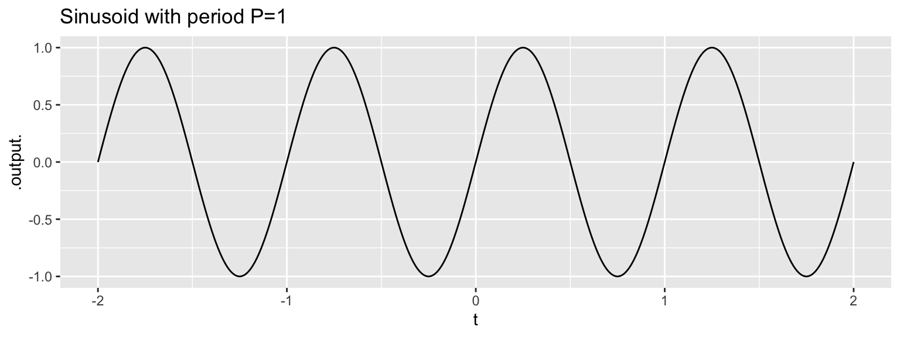
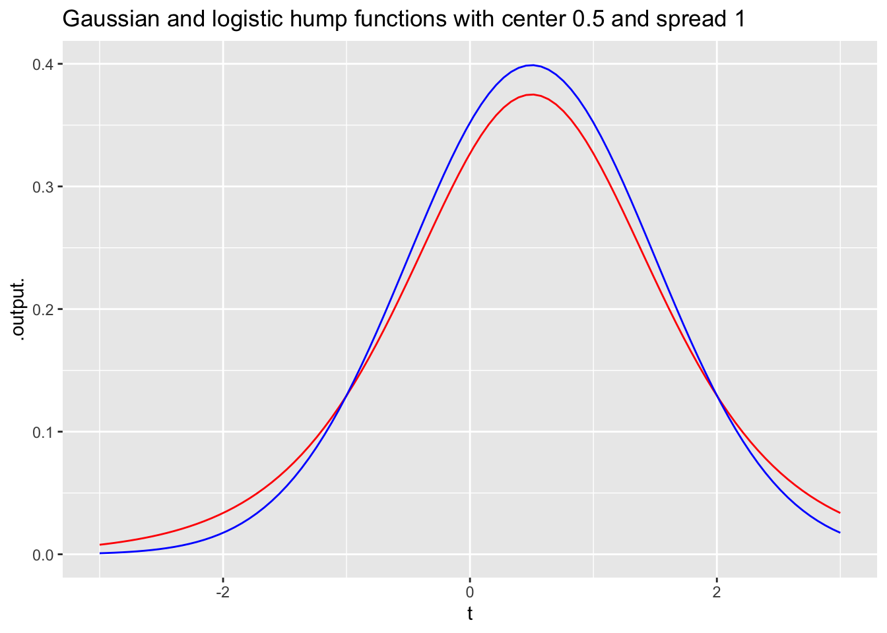

(Part) Block 1: Functions
0.1 Fun-1a
Objective Original: Understand the relationship between inputs and outputs for functions of one or two input variables, to include functions defined piecewise
Objective Revised: Recognize that functions are a way of representing (storing) what we know and be able to use properly the basic nomenclature of functions
People have many ways of organizing what they know. Often we rely on our intuitive abilities of memory, but we also have constructed frameworks to make the storage more accessible and reliable. One of these frameworks is the table, generally set up as an array of rows and columns. For instance, here is a table about a range of internal combustion engines of various sizes:
DT::datatable(Engines)Each row of the table reports on one, specific engine. Each column is one attribute of the of an engine. Using such tables can be easy. For example, if asked to report how fast the engine named “Enya 60-4C” spins, you would go down to the Enya 60-4C row and over to the “RPM” column and read off the answer: 11,800 revolutions per minute (RPM).
A table like this can be said to describe as raw numbers the general relationships between various engine attributes. For instance, we might want to understand the relationship (if any) between RPM and engine mass, or relate the number and diameter (that is, “bore”) and depth (that is, “stroke”) of the cylinders to the power generated by the engine. Any single entry in the table doesn’t tell us about such general relationships; we need to consider the rows and columns as a whole.
If you examined the relationship between engine power and cylinder number, diameter, and depth, you will find that (as a rule) the larger the number, diameter, and depth, the more powerful the engine. That’s a qualitative description of the relationship. Most educated people are able to understand such a quantitative description. Even if they don’t know exactly what “power” means, they have some rough conception of it. And almost everyone knows what diameter, depth, and number mean.
Often, we’re interested in having a quantitative description of a relationship such as the one (number, diameter, depth) \(\rightarrow\) power. Remarkably, the many of educated people are uncomfortable with the idea of using quantitative descriptions of a relationship: what sort of language the description should be written with; how to perform the calculations to use the description; how to translate between data (such as in the table) and a quantitative description; how to translate the quantitative description to address a particular question or make a decision.
This course is about constructing and using such quantitative descriptions, which we’ll call mathematical models. Skills for doing this are essential for work in engineering and science, and highly valued in many other fields in commerce, management, and government. Often, the work of applying such quantitative skills is called calculation. The name calculus is used to describe the methods that are widely used for undertaking calculations.
Functions are a fundamental way of organizing mathematical models and calculations. You have undoubtedly seen them in your previous mathematics education, but it’s worth reviewing them from the basics so that we can share a vocabulary for communicating about them.
- A function is a transformation from one or more inputs to an output.
- To keep things simple for now we’ll focus on inputs and outputs that are numeric, but later we’ll need a more nuanced view of “numeric” that takes into account the different kinds of things that are represented by numbers, e.g. length, power, RPM.
To see how functions work, imagine a long corridor with a sequence of offices, each identified by a room number. The input to the function is the room number. To evaluate the function for that input, you knock on the appropriate door and, in response, you’ll receive a piece of paper with a number to take away with you. That number is the output of the function.
This will sound at first too simple to be true, but … In a mathematical function each office gives out exactly the same number every time someone knocks on the door. Obviously, being a worker in such an office is highly tedious and requires no special skill. Every time someone knocks on the worker’s door, he or she writes down the same number on a piece of paper and hands it to the person knocking. What that person will do with the number is of absolutely no concern to the office worker.
The utility of such functions depends on the artistry and insight of the person who creates them: the modeler. An important point of this course is to teach you some of that artistry. Hopefully you will learn through that artistry to translate your insight to the creation of functions that are useful in your own work. But even if you just use functions created by others, knowing how functions are built will be helpful in using them properly.
In the sort of function just described, all the offices were along a single corridor. Such functions are said to have one input, or, equivalently, to be functions of one variable. To operate the function, you just need one number: the address of the office from which you’ll collect the output.
Many functions have more than one input: two, three, four, … tens, hundreds, thousands, millions, …. In this course, we’ll work mainly with functions of two inputs, but the skills you develop will be applicable to functions of more than two inputs.
What does a function of two inputs look like in our office metaphor? Imagine that the office building has many parallel corridors, each with a numeric ID. To evaluate the function, you need two numeric inputs: the number of the corridor and the number of the door along that corridor. With those two numbers in hand, you locate the appropriate door, knock on it and receive the output number in return.
Three inputs? Think of a building with many floors, each floor having many parallel corridors, each corridor having many offices in sequence. Now you need three numbers to identify a particular office: floor, corridor, and door.
Four inputs? A street with many three-input functions along it. Five inputs? A city with many parallel four-input streets. And on and on.
Applying inputs to a function in order to receive an output is only a small part of most calculations. Calculations are usually organized as algorithms, which is just to say that algorithms are descriptions of a calculation. The calculation itself is … a function!
How does the calculation work? Think of it as a business. People come to your business with one or more inputs. You take the inputs and, following a carefully designed protocol, hand them out to your staff, perhaps duplicating some or doing some simple arithmetic with them to create a new number. Thus equipped with the relevant numbers, each member of staff goes off to evaluate a particular function with those numbers. (That is, the staff member goes to the appropriate street, building, floor, corridor, and door, returning with the number provided at that office.) The staff re-assembles at your roadside stand, you do some sorting out of the numbers they have returned with, again following a strict protocol. Perhaps you combine the new numbers with the ones you were originally given as inputs. In any event, you send your staff out with their new instructions—each person’s instructions consist simply of a set of inputs which they head out to evaluate and return to you. At some point, perhaps after many such cycles, perhaps after just one, you are able to combine the numbers that you’ve assembled into a single result: a number that you return to the person who came to your business in the first place.
A calculation might involve just one function evaluation, or involve a chain of them that sends workers buzzing around the city and visiting other businesses that in turn activate their own staff who add to the urban tumult.
As you know, there is a powerful way of thinking about numbers in terms of space and geometry. For instance, a single number corresponds to a point on a line: the so-called number line. A pair of inputs, say, (x, y) corresponds to a point in a plane, often called the Cartesian coordinate plane. Three numbers corresponds to a point in space, perhaps organized into (x, y, z) of a Cartesian space. There are higher-dimensional spaces, but usually special training is needed to become comfortable with them. If you are having this discomfort, you might prefer to work with the office metaphor. Just for fun, here’s how you can think of a 10-dimensional space: 10 numbers, one telling you which planet, the next specifying the continent on that planet, and so on for country, state, city, street, building, floor, corridor, door.
The set of inputs with which the function can be evaluated is called the domain of the function. Sometimes we describe the domain as a space, e.g. the number line, the plane, and so on. Sometimes domains including more restrictions. For instance, a particular input might only meaningfully be positive, with no offices corresponding to negative values for that input. Or, an input might be restricted to be in the interval 0 to 1. Sometimes in calculus, the domain excludes an isolated point. For instance, there may be no office at the door marked 0 but the neighboring doors open into working offices.
The range of a function is the set of all the outputs that can be produced. Since at this stage we’re working only with functions that return a single number as output, it’s common to describe the range as all or part of the number line. For instance, some functions only have positive outputs. Other functions’ outputs are always in the interval 0 to 1. (This is the case, for instance, when the function returns a probability as the output.)
EXAMPLE: Weather forecasting by numerical process
Weather forecasting by numerical process is a highly influential book, from 1922, by Lewis Fry Richardson. He envisioned a calculation for a weather forecast as a kind of function. The domain for the forecast is the latitude and longitude of a point on the globe, rather than the rectilinear organization of corridor.
One fantastic illustration of the idea shows a building constructed in the form of an inside-out globe. At each of many points on the globe, there is a business. (You can see this most clearly in the foreground, which shows several boxes of workers.)
](Block-01-functions/www/Richardson-globe.jpg)
Figure 0.1: An artist’s depiction of the organization of calculations for weather forecasting by Richardson’s system. Source
Each business might work this way: In each business there is a person who will report the current air pressure at that point on the globe, another person who reports the temperature, another reporting humidity, and so on. To compute the predicted weather for the next day, the business has a staff assigned to visit the neighboring businesses to find out the pressure, temperature, humidity, etc. Still other staffers take the collected output from the neighbors and carry out the arithmetic to translate those outputs into the forecast for tomorrow. For instance, knowing the pressure at neighboring points enables the direction of wind to be calculated, thus the humidity and temperature of air coming in to and out of the region the business handles. In today’s numerical weather prediction models, the globe is divided very finely by latitude, longitude, and altitude, and software handles both the storage of present conditions and the calculation from that of the future a few minutes later. Repeating the process using the forecast enables a prediction to be made for a few minutes after that, and so on.
Some of the most important concepts in calculus relate to the process of collecting outputs from neighboring points and combining them: for instance finding the difference or the sum. To illustrate, here is the first set of equations from Richardson’s Weather forecasting …, writen in the notation of calculus:

You can hardly be expected at this point to understand the calculations described by these equations, which involve the physics of air flow, the coriolis force, etc. but it’s worth pointing out some of the notation:
- The equations are about the momentum of a column of air at a particular latitude (\(\phi\)) and longitude.
- \(M_E\) and \(M_N\) are east-west and north-south components of that momentum.
- \(\partial M_E /\partial t\) is the amount the east-west momentum will change in the next small interval of time (\(\partial t\)).
- \(p_G\) is the air pressure at ground level from that column of air.
- \(\partial p_G / \partial n\) is about the difference between air pressure in the column of air and the columns to the north and south.
Calculus provides both the notation for describing the physics of climate and the means to translate this physics into arithmetic calculation.
0.2 Fun-1b-1
Objective (Fun-1b-1) Understand that a mathematical graph consists of points in a composite space: the input \(\times\) output.
Needless to say, we won’t be implementing functions by building cities of multi-floor office buildings. Instead, we’ll have a variety of implementations that take different forms. We’ll start with two:
- Graphs: a form of representation that lets you evaluate a function by eye.
- Formulas: another form of representation that gives the instructions for evaluating a function using arithmetic (and other functions).
Scientific and statistical graphics are visual depictions of information and data. Mathematicians favor a particular style of graphics for representing functions with one or two inputs. This favored style is called a function graph, which has a specific technical meaning in mathematics.
In a function graph, the frame—a region on a piece of paper or other display—is a coordinate grid. Every position on the grid is represented by both the inputs to the function and the output from the function. For instance, for a function with one input, the frame is often the Cartesian coordinate plane, like this:

This graphics frame is not yet a mathematical graph. It’s merely the field on which the graph will be drawn. One axis represents the input to the function. The other axis represents the output from the function.
The graph shows the output for each individual input. That is, it is a series of points marking the level of the output for each given input. In our office metaphor for functions, the input is the number on the office door. But here the door numbers are not just integers (like 2) but any number on the number line (like 2.718282). So the points marked form a continuous curve, like this:

You can easily evaluate a function for a given input from its graph. As you know, just put your finger at the horizontal coordinate for the input. Then move your finger upward to reach the point on the curve directly above that horizontal coordinate. You read off the value of the function at that input by reference to the scale on the vertical axis.
Graphs are relatively modern, coming into mainstream use only in the 1700s. Much of mathematics was developed before graphs were invented. One consequence of this is that function tasks that are easy using a graph might be very hard with the previous ways of implementing functions. This is analogous to the way that arithmetic is pretty easy with Arabic numerals, but really hard with Roman numerals.
It’s not possible to show with a graph the whole of a function whose domain is \(-\infty\) to \(\infty\). Consequently, when drawing a graph we choose to show only that part of the domain that we expect will be relevant to our needs.
Sometimes, the graphic’s domain includes parts that are not in the domain of the function being drawn. In such cases, the function’s graph does not extend into the invalid part of the graphic domain, as in this plot of a function whose domain is only the positive numbers.
## Warning in log(x): NaNs produced## Warning: Removed 252 row(s) containing missing values (geom_path).
This function has a range that runs from \(-\infty\) to \(\infty\), but the limits of paper and display mean that we can show only part of this range. With experience, you’ll learn to read the hints in a graph that the underlying function might have a range larger than the one shown in the graphic.
We can also draw graphs of functions with two inputs. Now the points need to be marked in a 3-dimensional space: one axis for each of the two inputs and another axis for the output. Like this:
Figure 0.2: (Figure Fun-1b-1.2)
It is very hard to read a graph of a function with two inputs. Think of the graph as a kind of tent suspended over a domain of ground. The graph itself is a surface. To show the graph on a display, some tricks of the trade are used: color to give an additional scale for the output; computer graphics to let us rotate the surface to look at it from various perspectives, added grid lines and marks on the surface to help us read out the numerical value.
0.3 Fun-1b-2
Objective (Fun-1b-2) Interpret a contour plot of a function of two input variables, to include estimating function values and locations of peaks and valleys.
A mathematical graph is just one way to draw a picture of a function with two inputs. There are other ways. One helpful mode of picture is called a contour plot, familiar to many non-mathematicians in the form of topgraphical maps showing landscape elevation as a function of latitude and longitude. Here’s a contour plot of the same function shown in the previous graph:

Figure 0.3: (Fig-1b-2.1)
This contour plot is a topographical map of the mathematical graph in Figure Figure (Fun-1b-1.2)
It may take some practice to learn to read contour plots fluently but it is a skill that’s worthwhile to have. Note that the graphics frame is the Cartesian space of the two inputs. The output is presented as contour lines. Each contour line has a label giving the numerical value of the function output. Each of the input value pairs on a given contour line corresponds to an output at the level labeling that contour line. To find the output for an input pair that is not on a contour line, you interpolate between the contours on either side of that point.
For example, the input pair (0, 0)—which is at the bottom of the frame, midway from left to right—falls between the contours labeled “20” and “22.” This means that the output corresponding to input (0, 0) is somewhere between 20 and 22. The point is much closer to the contour labeled “20”, so it’s reasonable to see the output value as 20.5. This is, of course, an approximation, but that’s the nature of reading numbers off of graphs.
Often, the specific numerical value at a point is not of primary interest. Instead, we may be interested in how steep the function is at a point, which is indicated by the spacing between contours. When contours are closely spaced, the hillside is steep. Where contours are far apart, the hillside is not steep, perhaps even flat.
Another common task for interpreting contour plots is to locate the input pair that’s at a local high point or low point: the top of a hill or the bottom of a hollow. Such points are called local argmax or local argmin respectively. The output of the function at a local argmax is called the local maximum; similarly for a local argmin, where the output is called a local minimum. (The word “argmax” is a contraction of “argument of the maximum.” We will tend to use the word “input” instead of “argument”, but it means exactly the same thing to say “the inputs to a function” as to says “the arguments of a function.”)
Still other common tasks for reading contour plots are to start at a given input pair and figure out 1) the direction to move which is most steeply uphill, or 2) the direction to move which will keep the function output the same.
It can be helpful to look at a contour map and interpret the contours as representing geographical features: hills, valleys, crests, coves, hollows, and so on.
Then, for (Fun-1c) translate between a contour plot and a graph of a function with one input. (We can think about this as a function of two inputs, where we hold one of the inputs constant, that is, always the same. )
0.4 Fun-1c
Objective (Fun-1-c): Know what is meant by a slice of function of two variables. Be able to determine if a function is increasing, decreasing, or constant when moving horizontally or vertically on the contour plot.
As mentioned before, mathematical modeling is the process of constructing mathematical representations of situations or phenomena of interest. In CalcZ, we are primarily interested in using functions as such representations.
Almost always, when mathematically modeling a real-world situation or phenomenon, we do not try to capture every nuance of every relationship that might exist in the real world. We leave some things out. Such simplifications make modeling problems tractable and encourage us to identify the most important features of the most important relationships.
On the other hand, it’s easy to go wrong and leave out something that’s important. To mitigate this risk, many modeling projects involve a modeling cycle where we propose a candidate model, examine the consequence of that model to see if it corresponds well to the parts of reality that are important to us in our task, and modify the model as needed to produce a new and better candidate.
In this spirit, it’s useful always to assume that our models are leaving something out and that a more complete model involves a function with more inputs than the present candidate. The present candidate model should be considered as a slice of a more complete model. Our slice leaves out one or more of the variables in a more complete model.
To illustrate this, suppose that we have a “more complete model” in the form of a function of two inputs, as shown in the contour plot below.
As you become practiced reading contour plots, you might prefer to read this one as a hilltop (shaded yellow) side-by-side with a hollow or bowl (shaded purple), with green, almost level flanks at the left and right edges of the frame.
The most common forms of slice involve constructing a simpler function that has one input but not the other. For example, our simpler function might ignore input #2. There are different ways of collapsing the function of two inputs into a function of one input. An especially useful way in calculus is to take the two-input function and set one of the inputs to a constant value.
For instance, suppose we set input #2 to the constant value 1.5. This means that we can consider any value of input #1, but input #2 has been replaced by 1.5. In Figure Fig-1c.2, we’ve marked in red the points in the contour plot that give the output of the simplified function.
Each point along the red line corresponds to a specific value of input #1. From the contours, we can read the output corresponding to each of those values of input #1. This relationship, output versus input #1 can be drawn as a mathematical graph (to the right of the contour plot). Study that graph until you can see how the rising and falling parts of the graph correspond to the contours being crossed by the red line.
Slices can be taken in any direction or even along a curved path! The blue line below the slice constructed by letting input #2 vary and holding input #1 and the constant value 0.
0.5 Fun-1B-a
Objective (Fun-1B-a) Identify the structure of function notation when the function is defined by a formula.
A graphic such as a contour plot or a mathematical graph can be an excellent way of presenting a function to a human viewer. There are other ways of presenting functions that have other advantages, such as speed of evaluation, computer readability, and the ability to perform computations that derive a new function from the original. If you have studied calculus before, you know the word “derivative,” which is all about a particular kind of new function created from an original. We’ll get to this in good time along with other ways of “deriving” new functions from old.
Let’s look carefully at some formats for organizing the parts of a function.
Consider the function \[g(x) \equiv m x + b\] You already know:
- \(g()\) is the name we’ve given to the function. The name is the choice of the modeler.
-
\((x)\) indicates that there is one input to \(g()\) and that we are going to call this input “\(x\)”.
- The parentheses are simply punctuation.
- If we wanted a function with two inputs, we would need two different names inside the parentheses and would separate them with a comma: e.g. \(h(x, y) = a_0 + a_x x + a_y y\).
- \(m x + b\) is a formula in traditional mathematical notation. So is \(a_0 + a_x x + a_y y\). a. Note that there is no equal sign in a formula; a formula is not an equation! b. The formulas we’ve seen so far can be evaluated with arithmetic. But often a formula will involve the invocation of another function. For example: \(\sqrt{\strut m x + b}\) or \(\sin(m x) + \ln(b)\).
It’s helpful to generalize the idea of a formula a bit. An algorithm is a set of instructions for performing a computation. High-school math typically involves presenting algorithms as formula. You learned, maybe in middle school, how to follow the arithmetic steps involved in algorithms described as formulas. You also have likely used a calculator to perform some of the arithmetic or to evaluate functions such as \(\sin()\) and \(\ln()\) and \(\sqrt{\strut}\) for which you don’t know how to evaluate using simple arithmetic. The calculator is implementing an algorithm with which its been programmed to enable the calculation of \(\sin()\) and \(\ln()\) and such.
Many functions are described by algorithms that use concepts common in computer programming but unknown to traditional mathematical notation. Some of these have names like iteration or branching and many refer to stored lists of fixed numbers (like the office workers in the street, building, floor, corridor, door image of a function). We’ll deal with some of these things later, but for now …
We are going to use the word algorithm to name the kind of expression to the right of \(\equiv\) in a function definition. A formula is a specific kind of algorithm generally written in traditional math notation.
Algorithms, including the ones that are formulas, are written in terms of a set of symbols that stand for inputs. This is a high-fallutin’ way of saying something simple: in \(mx + b\), the \(x\), \(m\), and \(b\) are the names we give to the quantities being used in the calculation.
The notation we are using for function definition lists some of these names in two places, and others in only one place. Again, look at \[g(x) \equiv m x + b\] The \(x\) appears both in the algorithm and the list of input name \((x)\) to the left of \(\equiv\).
The \(m\) and \(b\) are different; they appear only in the algorithm. The word for such quantities in mathematics is parameter. Eventually, when the algorithm is followed, we’re going to have to put in specific numerical values in place of each parameter.
Where will these parameter values come from? This is a subject on which mathematical notation is silent. You have to figure it out from context and experience. This is potentially very confusing, especially when a human is not around to sort things out.
Fortunately, the notation used in computer programming does not have this flaw. Depending on the language things can be handled in one way or another. For experienced computer programmers: This is the issue of scope. In the software used in CalcZ (R, with the mosaic package of extensions), we will take a simple-to-use approach that avoids your having to deal with scope.
It works like this:
All modeling functions we construct with R/
mosaicwill list parameters formally as arguments to the function.
It is as if we wrote in traditional notation \[g(x, m, b) \equiv m x + b\]
There is also a way to give default numerical values to parameters so that you can write \(g(3.5)\) and the computer will know where to find the parameter values. In writing about formulas using math notation, we’ll extend the traditional notation to write, for instance, \(g(x, m=2, b=3) \equiv m x + b\).
In R/mosaic, we would construct a mathematical function like \(g()\) using the makeFun() function:
g <- makeFun(m*x + b ~ x, m=2, b=3)You could also write
g <- makeFun(m*x + b ~ x)but this notation means that you will have to give specific numerical values for the m and b inputs whenever you evaluate g(). There won’t be any default values for the “parameters-as-inputs” m and b.
- Relevant Blog post: CalculusBlog/post-formal-arguments.Rmd
0.6 Fun-1B-b
Objective (Fun-1B-b): Identify and create R versions of mathematical functions using makeFun() and tilde expressions.
0.7 Fun-1B-c
Objective (Fun-1B-c) Use the slice_plot(), contour_plot(), and domain() functions in R/mosaic.
0.8 Fun-1B-d
Objective (Fun-1B-d) Master the conventions used in CalcZ for giving names to functions and for referring to functions with “pronouns.”
We’re going to be using a lot of functions in CalcZ. Some of these functions have proper names, usually written using short sequences of letters: for instance \(\sin()\), \(\ln()\), \(\exp()\).
Other functions will needed just for a sentence or a paragraph or a section, perhaps being used in an example or to lay out the steps of an algorithm. In natural languages such as English, we often use pronouns for such purposes: she, he, it, they, we, I, …. We also will use pronouns for identifying functions. Our policy is this:
A pronoun for a function will be named \(f()\) or \(g()\) or \(h()\) or the corresponding upper-case letters \(F()\), \(G()\), or \(H()\). The particular choice of letter f, g, or h has no significance whatsoever. It is just a way to give an unambiguous handle for a function that we are going to be using for a little while.
On occasion, we will use subscripts or superscripts on these pronoun letters, for instance \(f_1()\) or \(g^\star()\). This is a way to give us many more possible pronouns when we need them. Perhaps this is analogous to words like “sister,” “parent,” “husband,” “cousin,” etc. that allow us to refer, without a proper name, to a specific person.
On other occasions, where a function relates to a specific quantity such as position or velocity, we will use the names \(x()\), \(y()\), \(z()\), \(u()\), \(v()\), \(w()\), and such. These letters are, of course, the same ones we frequently use to name the inputs to functions. How do you know whether the letter is meant to refer to an input rather than a function? That’s the point of the parentheses: \(x()\) is a function name, \(x\) is an input name.
It can become tedious to give a name to every function, even if it’s not being used again. Consider this awkward sentence as an example: “The functions \(g(x) \equiv \sqrt{\strut x}\) and \(h(x) \equiv x^3\) are examples of power-law functions.” So we’ll feel free to write instead, “\(\sqrt{\strut x}\) and \(x^2\) are examples of power-law functions.”
Without the formality provided by “\(g(x) \equiv\)” it can be hard to know whether \(\sqrt{\strut x}\) means “the square-root function” or "take the square root of a specific number \(x\). The convention we will use is based on the name used in the expression. When standard argument names from the end of the alphabet are being used without any subscript (e.g. \(x_0\)) or with a special symbol as a subscript (e.g. \(t^\star\)), we intend the expression to be a function. However, when we want to apply a function to specific values for inputs we will write in any of the following styles:
\[f(x^\star) \ \ \mbox{or}\ \ \sqrt{\strut x^\star}\ \ \mbox{or}\ \ \sqrt{\strut x=3}\ \ \mbox{or}\ \ \left.\sqrt{\strut x}\right|_{x=3}\ \ \mbox{or}\ \ \left.g(x)\strut \right|_{x=3}\]
One of the important techniques of calculus is to take something we often think of as a number and turn it in to a function whose output is a number. It will take you time to get used to the calculus notation and to be able to tell at a glance whether something is a function or a number.
Here’s an illustration that will only make sense to those who have already studied some calculus:
\[\int\! f(x) dx \ \ \mbox{is a function, but}\ \ \int_0^3\! f(x) dx\ \ \mbox{is a number.}\]
Give yourself a break as you’re learning the notation conventions. When you read a mathematical expression, a good first question to ask is, “What kind of thing is this? A function? A number?”
A major reason that such care about notation is needed is that in addition to writing math in traditional mathematics notation (e.g. \(e^x\) (which, as the above indicates, is a function) or \(\ln(y^\star)\) (which is a number)) we need to be able to convey mathematical ideas to computers. Traditional mathematics notation was developed in the pre-keyboard era (that is, pre-typewriter era) and before the development of computer languages brought to the fore the effectiveness of structuring computing instructions as functions. For reference, here are some R expressions:
-
f <- makeFun(x^2 ~ x)defines a functionf()that the computer can use. It means the same thing to the computer as \(f(x) \equiv x^2\) means to the human reader. A tilde expression such asx^2 ~ xis a way of making clear that a symbol (xhere) stands for the input to a function. -
x_pts^2means to square the particular values stored under the namex_pts. To be sure, it’s also perfectly valid computer syntax to writex^2, sincexis just as good a name for a computer object asx_pts. But we will avoid such use of names likex. - For people who are already familiar with R, note that the style
f <- function(x) { x^2 }is the universally accepted way to write R functions.{ x^2 }is the body of the function. (In CalcZ we usemakeFun()as a kind of shorthand.makeFun()is provided by the mosaic package.
EXERCISES: According to the notation style we use in CalcZ, which of these things is a function? Which a number?
- \(\sqrt{z}\): function
- \(\sqrt{y^\star}\) number
- \(e^{k t}\) function of \(t\). The letter \(t\) is one of our standard letters for input names. \(k\) is a letter, but since it is not from the end of the alphabet, you have a hint that it is intended to be a parameter, that is a symbol representing a specific numerical quantity.
- \(g(k) \equiv e^k\) a function of \(k\). Notwithstanding our convention that \(k\) is not on its own a name used for inputs, when we use the full function-definition style, anything in the parentheses following the function name is explicitly stated as an input name.
0.9 Fun-intro
A central task in solving problems with mathematical modeling is the construction of appropriate functions to capture important features of the real-world situation you are working with. You’ve seen the notation that we’re going to use to describe functions to either the computer or the mathematical reader, and learned some of the terminology: function name, inputs, output, arguments, argument names, parameters, default values for parameters, algorithm, makeFun(), tilde expressions, and so on.
The next step in developing modeling skills is to acquaint yourself with a set of basic modeling functions that provide important building blocks for the functions you will construct in your mathematical modeling work. Drawing on the collective experience of the mathematical modeling community, we have identified a small set of specific function families which address a large set of the most common modeling situations.
The next several sections are like the displays in a hardware store. The display consists of a large number of collections of bins. Each collection consists of a single type of hardware, for instance, a washer. There are many collections because there are many kinds of hardware: bolts, wood screws, metal screws, nuts, washers, gaskets, etc. Typically, each collection involves a large number of bins containing different sizes or materials of the hardware item.
 Display racks of fasteners and other hardware.](Block-01-functions/www/hardware-display.jpg)
Figure 0.4: Source Display racks of fasteners and other hardware.
The function families you will study correspond to different kinds of hardware. We’ll need just a few—nails, screws, bolts, washers, nuts—enough to get you started on the common tasks. We call them a families of functions because most of them involve parameters, analogous to the different size of the hardware item. Depending on what field you work in, you may find yourself needing specialized functions: a “nut” is not enough, you will need to distinguish between wing nuts, wire nuts, cap nuts, flange nuts, tee nuts. (If you’re interested to see what a hardward store for mathematical functions looks like, explore the Digital Library of Mathematical Functions maintained by the US National Institute of Standards and Technology.)
Here’s a list of what we are calling the basic modeling functions. Other authors might exclude one or two or include an alternate, but this list will serve you well.
- Linear function
- Exponential function
- Power-law function
- Logarithm
- Sinusoid
- Sigmoid
- Hump
For each function in this list, you’re going to see the traditional mathematical name (if there is one), the parameter(s) used in the functions, the graphical “shape” of the function, and one or more common settings where the function is used. When appropriate, we’ll also see how to choose values for the parameters in order to match data as closely as possible.
Each of these function takes a single input, which we’ll generally name \(x\) or \(t\). We’ll use names for the parameters that are more or less standard in the literature
While we’re making the list, we’ll add two functions that appear in often in combination with the above but which are so modest that people don’t always notice them. By naming them, we’ll be able to point out the roles they play.
- The constant function
- The proportionality function
0.10 Fun-1C-abcd
i. (Fun-1C-a) *Review (from previous math classes) the parameters of the straight-line function: y-intercept and slope.*
ii. (Fun-1C-b) *Use a straight-line function in a modeling context.*
iii. (Fun-1C-c) *Spot discrepancies of data from a straight-line model.*
iv. (Fun-1C-d) *Construct a hock-stick function by piecewise combination of a constant function and a straight-line function with non-zero slope.*We’ll start with a simple function that appears throughout calculus and mathematical modeling. You probably have heard this function called a “linear function,” but we prefer to call it a “straight-line” function since its graph is a straight line. (Aside for the mathematically experienced: Strictly speaking, what’s called the linear function does not have the technical property of linearity, which in mathematics means something subtly different than “straight line.” We’ll need the mathematical property of linearity later in CalcZ.)
Let’s define a function \(g()\) which is a straight-line function: \[g(x) \equiv m x + b\] You likely have worked a lot with this kind of function in your previous math courses. If so, recall that there are two parameters, \(m\) and \(b\) called the slope and y-intercept respectively.
The straight-line function might be thought of as the default modeling function. If you want to describe a relationship between two quantities, using the straight-line function can often be just what’s required.
In using calculus, we’ll often be zooming in on a function over a tiny domain. Just about any function, when looked at over a tiny domain, is approximately a straight-line function.
To illustrate, consider the data plotted below recording monthly household natural gas use for the author’s family. This varies from month to month, and since gas is mainly used for heating the house, it’s reasonable to think that gas usage is related to the outdoor temperature. Each dot in the graph shows one month’s data, with temperature measured in degrees F and natural gas measured by volume: cubic feet appreviated ccf. A straight-line function has been fitted to the data.

The graph has several features that are not unusual when using data to construct a mathematical model.
The function selected, which gives ccf versus outdoor temperature, is roughly centered on the cloud of data. That is, for a given input value, the function output goes through the vertical center of the data points near that input value.
For part of the domain, the function is a good match to the data.
For another part of the domain, temperatures above about 60 degrees, the function deviates systematically from the data. Indeed, the output of the function is negative when temperature is above the mid 60s. (Of course, the amount of natural gas used can hardly be negative!)
There are a few data points, near 40 and 60 deg. F that are far from the output of the model at those temperature. Such points are called outliers. One of the uses of mathematical models in interpreting data is to make it easier to spot data records that don’t fit an overall pattern. (From the graph itself, one can only speculate about what might be responsible for the outliers. Here it seems to be an error in transcribing the data.)
The straight-line function has two parameters: the slope and the intercept. Since the domain of the graph includes 0, we can read the intercept directly from the graph: at an input of 0 the function output is roughly 300 ccf.
The slope is, famously, the “rise over run.” Mark off a convenient interval on the domain. We’ll use 0 to 64 degrees. Then find the vertical interval of the function output over that interval on the domain. We selected 0 to 64 for the domain since the function output is easy to read: about 300 ccf at 0 deg and 0 ccf at 64 degrees. The amount of “rise” is therefore \(0-300\) ccf and the run is \(64 - 0\) deg, so the slope is \[\frac{0-300}{64-0} \frac{\text{ccf}}{\text{deg}} \approx -4.6 \frac{\text{ccf}}{\text{deg}}\] The negative sign on the slope indicates that the function output falls as the input increases.
For a straight-line function, you will find the same slope whatever non-zero interval on the domain you choose for the run. Many other kinds of functions have a slope that differs for different inputs. One of the central ideas of calculus is that even for non-straight-line functions, a meaningful calculation of the slope at a single input can be constructed. We’ll examine that issue carefully later in the course.
In calculus, the slope of a function is a quantity of particular interest. Here, the slope tells us that a one degree increase in outdoor temperature (averaged over a month) corresponds to a 4.6 ccf decrease in natural gas use.
As you’ll see later in the course, the slope of a function is the sensitivity of the output to a change in the input.
It’s often the case that a given model accounts for only part of the pattern seen in data. There are many synonyms for “accounts”: “captures only part of the pattern,” “matches only part of the pattern,” and so on. The blue straight-line model in Figure ?? doesn’t account for the leveling out of natural gas use for temperatures greater than about 60 degrees.
Modelers look for such discrepancies between a candidate model (here, the blue line) and the data. Sometimes such discrepancies indicate that the wrong kind of mathematical function has been selected for the model or that the model has not been fitted to the data properly. A skilled modeler will treat the discrepancies as an opportunity to learn more about the real-world system being modeled. With this additional knowledge, a better model can be constructed.
Those familiar with home heating will know that for temperatures about about 60 degrees F, no heating is necessary and fuel use for heating falls to zero. But there are other uses for fuel such as cooking and water heating. To judge from the data, those uses don’t depend in any strong or obvious way on outdoor temperature.
Exercise: Compare the straight-line model fitted to all the ccf data to the model fitted to data where the temperature was less than 60 degrees. Implement as heating_ccf(temp)
Exercise: Make a straight-line model for the energy used for cooking and heating. Implement as other_ccf(temp)
Exercise: Piece together the two models to make a more comprehensive model of energy use. Show the computer implementation of this function.
all_ccf <- makeFun(
ifelse(temp < 60,
heating_ccf(temp) + other_ccf(temp),
other_ccf(temp)) ~ temp)0.11 Fun-2-a Exponential functions
Objective (Fun-2a) Recognize the key characteristics of an exponential function’s graph, to include both increasing and decreasing exponential functions
Additional objective (not numbered) Use correctly statements like, “the slope of the function \(g(x)\) with respect to \(x\) is a function of \(x\).”
An important concept in calculus is the change in output of a function for a given change in input. The experiment to measure a change in output is very simple:
- Start with some fixed value for the input \(x_0\) and record the function output \(f(x_0)\).
- Change the input by an amount \(h\) and record the function output \(f(x_0 + h)\).
- The change in input is \(h\), the corresponding change in output is \(f(x_0 + h) - f(x_0)\).
You can choose whatever value for the change in input \(h\) is convenient. Often, the choice is “one unit of input.” Obviously, this depends on how you quantify the input. For instance, in Figure ??, where we looked at natural gas usage (ccf) as a function of average monthly temperature (deg. F), a unit of input is 1 degree F.
The change in output divided by the change in input is, as you know, the slope of the function. For a straight-line function in Figure ?? the slope is \(-4.6 \frac{\text{ccf}}{\text{deg}}\). “Slope” is a nice physical metaphor, but talking about the “slope of gas use” is bound to be confusing. People who are familiar with calculus use the word “derivative,” as in “derivative of gas use with respect to temperature.” For a straight-line function, the “derivative” is constant, that is, it doesn’t change with \(x_0\).
The exponential function is our first basic modeling function family with a non-constant derivative. Figure ?? shows the function \(f(x) \equiv e^{x}\).
For use in modeling, we generally have to pick the right “shape” from the exponential family. We’ll generally write the exponential function with a parameter \(k\) and the formula \(e^{kt}\).
Figure ?? shows exponential functions with several different numerical values for the parameter \(k\).
Some features of the members of the exponential family \(g(x) \equiv e^{kx}\):
- When \(k > 0\) the function output increases with \(x\). But when \(k < 0\) the function output decreases as \(x\) gets bigger.
- For any \(k\), the value of \(g(0) = 1\).
- When \(k > 0\), the value of \(g(x)\) becomes very small when \(x\) is negative but large (that is, to the left). When \(k < 0\), the value \(g(x)\) becomes very small when \(x\) is positive and large. A way to say this in symbols is that, for negative \(k\), the limit as \(x \rightarrow \infty\) is zero. Similarly, for positive \(k\), the limit \(x \rightarrow -\infty\) is zero. We use the word asymptotic to denote such limits.
Notice that as the value of \(g(x) \rightarrow 0\) the function gets flatter. That is, as \(g(x) \rightarrow 0\), the slope of \(g(x)\) also goes to zero. And when \(g(x)\) is large, the slope is also large and either positive or negative depending on \(k\).
0.12 Fun-2-b
Objective (Fun-2b) Know that exponential functions have the property that their slope (rate of change) at each input is proportional to the height of the function at that same input. And that the slopes approach zero in one of the directions
Look back at Figure ??.
Clearly the slope of each of the functions is different for different values of the input \(x\). Better to say this using function language: The slope of the exponential function \(f(x)\) is itself a function of \(x\).
With this sort of language in mind, we can return to the description of the slope of a straight-line function and say any of these: “the slope of the straight line function \(g(x) \equiv m x + b\) is not a function of \(x\)” or “the slope of \(g(x)\) is constant with respect to \(x\),” or “the slope of \(g(x)\) is a constant function with respect to \(x\). A”constant function" is one whose output does not depend on the input, for instance \(\text{const}(x) = 7\). (In terms of an office building, a constant function is a building where the worker at every door gives exactly the same response, here 7.)
You can see from Figure ?? that the slope of the exponential function is positive and gets bigger as \(x\) gets bigger.
You could draw lots of functions whose slope is an increasing function of its input. But there’s something very special about the exponential function that gives it a high status among the basic modeling functions:
The slope of the exponential function is alway proportional to the value of the exponential function.
It’s worth unpacking that simple statement a bit. We have an exponential function \(g(x) \equiv e^x\). The slope of the exponential function is, as we have described, \[\text{slope of}\ g(x)\ \mbox{is} \ \frac{e^{x + h} - e^x}{h} = \frac{e^x e^h - e^x }{h} = e^x \frac{e^h - 1}{h}\] Look carefully at the term \((e^h - 1)/h\). Notice that there is no \(x\) in it. Thus, the function \((e^h - 1)/h\) is constant with respect to \(x\). In other words \[\text{slope of}\ g(x)\ \mbox{is} \ \mbox{constant} \times e^x\].
EXERCISE: Compute \((e^h - 1)/h\) for \(h=2, 1, .1, .01, .001\). Describe what happens. (We might write, “As \(h \rightarrow 0\), the quantity \(\frac{e^h - 1}{h} \rightarrow 1\).”)
The exponential function is particularly useful when the quantity we want to model shows constant proportional increase. Many quantities in everyday life are this way. For instance, if you get an increase in salary you typically say something like “a 3% increase.” The population growth of a country is often presented as “percent per year.” Inflation in the price of goods is similarly described in percent per year. Interest on money in a bank savings account is also described as percent per year. But if you have the bad fortune to owe money to a loan shark, the proportional increase might be described as “percent per month” or “percent per week.”
EXERCISE: Go back to Figure ?? and calculate the percent increase in the output of \(g(x)\) when \(x\) is increased by one unit. LEAD THEM THROUGH DOING THIS FROM x=0 to 1, and then for other starting points.
0.13 Fun-2-c
Objective (Fun-2c) Know how changing the values of C and k affect the properties of the exponential model \(g(x) \equiv C e^{kt}\) (table page 62)
Objective Revised (Fun-2c) Understand that \(e^{kt}\), \(2^{k_2 t}\), and \(10^{k_{10} t}\) are all the same function, when \(k = k_2 \ln(2) = k_{10} \ln(10)\). Relate \(k_2\) to the doubling time and \(k_{10}\) to the time to increase 10-fold.
0.14 Fun-2-de Power-law functions
Objectives:
- (Fun-2d) Distinguish between exponential functions and power-law functions.
- (Fun-2e) Relate power-law functions to physical quantities.
Exponential functions such as \(f(t) \equiv e^{kt}\) or \(f_2(t) \equiv 2^{k_2 t}\) and \(f_{10}(t) \equiv 10^{k_{10} t}\) (all of which can be arranged to produce exactly the same output for corresponding values of \(k\), \(k_2\), and \(k_{10}\)) can be remembered as such because the function input appears as an exponent in the function formula.
There is a very different kind of function, called a power-law function, which is different from an exponential, and has different uses, yet is very often confused. In a power-law function, the input is being raised to a power, for example, \(g(t) \equiv t^2\). The exponent is a parameter and the input is being raised to the indicated power, for instance 2 for \(g(t)\).
Figure ?? shows a few members of the power-law family with different exponents, both positive and negative. For contrast, one exponential function is also drawn (in green).
As you can see, the shapes of power-law functions can be very different depending on the value of the exponent parameter. For many values of the exponent parameter, the function domain is \(-\infty < t < \infty\) while for others the domain is just the positive numbers: \(0 < t < \infty\). None of them resemble an exponential function.
What do all these differently shaped functions have in common that warrants them all being placed in the same family? Of course, they all involve raising the function input to a power: positive or negative, integer or otherwise (e.g. 1.5). The main thing they have in common is the settings they are used in.
You have been using power-law functions from early in your math and science education. Some examples:
| Setting | Function formula | exponent |
|---|---|---|
| Circumference of a circle | \(C(r) = 2 \pi r\) | 1 |
| Area of a circle | \(A(r) = \pi r^2\) | 2 |
| Volume of a sphere | \(V(r) = \frac{4}{3} \pi r^3\) | 3 |
| Distance traveled by a falling object | \(d(t) = \frac{1}{2} g t^2\) | 2 |
| Gas pressure versus volume | \(P(V) = \frac{n R T}{V}\) | \(-1\) |
| … perhaps less familiar … | ||
| Distance traveled by a diffusing gas | \(X(t) = D \sqrt{ \strut t}\) | \(1/2\) |
| Animal lifespan (in the wild) versus body mass | $L(M) = a M^{0.25} | 0.25 |
| Blood flow versus body mass | \(F(M) = b M^{0.75}\) | 0.75 |
The reason why power-law functions have their important role in science have to do with the logic of physical quantities such as length, mass, time, area, volume, force, power, and so on. We’ll discuss this at length later in the course and the principles will appear throughout calculus.
0.15 Fun-3a: Logs
Objective (Fun-3a1) Understand a logarithm (base-10) as signifying the magnitude of a number by the digit count. See \(\log_2()\) and \(\log_{10}()\) as counting digits in base-2 and -10 respectively.
Let’s talk about logs. For many students, logarithms are the breaking point in their mathematical studies. I’ve encountered well educated professionals who are evidently afraid of logarithms and take the word itself as a promise that what’s coming will be hard to understand. I suspect that some of this comes from being introduced to logarithms as a means of dealing algebraically with power-law and exponential functions.
If logarithms are a source of anxiety because of their association with algebra and concerns about what use they could otherwise be for, take a step back, close your eyes, and we’ll start over, but more gently.
Undoubtedly you are comfortable with the standard way of writing numbers, for instance 33 or 512 or 1051. Elementary school students master the comparison of such numbers to one another. Which is greater: 512 or 33? Which is less, 1051 or 512? You can answer such questions at a glance because the comparison here can be accomplished simply by counting the number of digits. 1051 has four digits, so it is larger than the three-digit number 512. There are two digits in 33, so it smaller than 512. When two numerals have the same number of digits—say, 337 and 512—you can’t answer the “greater than” question by simple counting. Instead, you proceed from left to write and compare the number in each place. So, for 512 and 337, you compare 5 to 3 and … since 5 is greater than 3, 512 is greater than 337. If the two leading digits are the same, go on to the next digit and so on for all the digits in turn.
Things were not always this simple. Our number system that uses place and Arabic numerals is a human invention. An example of an earlier number system is Roman numerals. Here, comparison is hard. For instance, which of these three numbers is bigger?
\[\mbox{MLI or CXII or XXXIII}\] The typographically shorter number is the largest, and vice versa. Even when two Roman numerals have the same length, it’s not trivial to compare them on a place-by-place basis. For instance, IC is about fifteen times bigger than VI, even though I is much smaller than V.
Digit counting provides an easy, fast way to perform many calculations, at least approximately. What is \(\sqrt{10000}\)? There are five digits, and the square root of a number will have “half the number of digits.” So, \(\sqrt{10000} = 100\). What is \(10 \times 34\)? Easy: 340. Just append the one zero from 10 to the end of 34. What is \(1000 \times 13\)? Just as easy: 13,000. We even punctuate written numbers with commas and a period in order to facilitate counting digits.
Imagine having a digit counting function called digit(). It takes a number as input and produces a number as output. We don’t have a formula for digit(), but for some inputs the output can be calculated just be counting. For example:
- digit(10) \(\equiv\) 1
- digit(100) \(\equiv\) 2
- digit(1000) \(\equiv\) 3
- … and so on …
- digit(1,000,000) \(\equiv\) 6
- … and on.
The digit() function easily can be applied to the product of two numbers. For instance:
- digit(1000 \(\times\) 100) = digit(1000) + digit(100) = 3 + 2 = 5.
Similarly, applying digit() to a ratio gives the difference of the digits of the numerator and denominator, like this:
- digit(1,000,000 \(\div\) 100) = digit(1,000,000) - digit(100) = 6 - 2 = 4
For an input \(x\) consisting of a 1 followed by zeros, any fool can calculate the output: just count the zeros. But for other numbers, it’s not so easy.
The people who originally proposed the crazy-sounding notion that digit() can be applied to numbers like 32 were wild innovators of the late 16th and early 17th centuries, but they had ideas about how to do the calculation. Some examples:
- 32 \(\times\) 32 1000.
- So, digit(32 32) digit(1000) = 3$.
- Applying the multiplication rule means digit(32) + digit(32) \(\approx\) 3, so digit(32) \(\approx\) 1.5.
-
\(32 = 2 \times 2 \times 2 \times 2 \times 2\)
- Since digit(32) \(\approx\) 1.5, we know that 1.5 5 \(\times\) digit(2) which tells us that digit(2) \(\approx\) 0.3.
It’s hard to do such calculations in your head, but fortunately the arithmetic whizzes who invented digit() could handle it and made tables giving the output of digit(\(x\)) for many different values of \(x\). Here’s part of the first page of the first widely published table, in 1617. The project was supervised by Henry Briggs. (1561-1630)

The table was called the Chilias prima, Latin for “First group of one thousand.” True to its name, the table gives the output of digits() for the inputs 1, 2, 3, …, 998, 999, 1000. For instance, as you can see from the top row of the right-most column, digits(67) = 1.82607480270082.
In everyday speech, 67 has two digits. The authors of Chilias prima sensibly didn’t use the name “digit()” for the function. They chose something more abstract: “logarithm()”. Nowadays, this function is named \(\log_{10}()\). In R, the function is called log10().
log10(67)## [1] 1.826075Our main use for \(\log_{10}()\)/log10() will be to count digits in order to quickly compare the magnitude of numbers. The difference digits(\(x\)) - digits(\(y\)) tells how many factors of 10 separate the magnitude of the \(x\) and \(y\).
Another important logarithmic/digit-counting function is \(\log_2()\), written log2() in R. This counts how many *binary digits are in a number. For us, \(\log_2(x)\) tells how many times we need to double, starting at 1, in order to reach \(x\). For instance, \(\log_2(67) = 6.06609\), which indicates that \(67 = 2\times 2 \times 2 \times 2 \times 2 \times 2 \times 2^{0.06609}\)
\(\log_2(x)\) and \(\log_{10}(x)\) are proportional to one another. One way to think of this is that they both count “digits” but report the results in different units, much as you might report a temperature in either Celsius or Fahrenheit. For \(\log_2(x)\) the units of output are in bits. For \(\log_{10}(x)\) the output is in decades.
A third version of the logarithm function is called the natural logarithm and is denoted \(\ln()\) in math notation and simply log() in R. We’ll need additional calculus concepts before we can understand what justifies calling \(\ln()\) “natural.”
EXERCISE: Compute \(10^y\) to convert a “number of digits” into the number whose digits are being counted. For instance, \(10^2.5\) is 316.228.
EXERCISE: How many binary digits in 64? in 127?
EXERCISE: \(\log_{10}(x)\) and \(\log_2(x)\) are proportional to one another. What’s the constant of proportionality?
POSSIBLE COMPUTATIONAL ENRICHMENT: AN EXAMPLE OF A FUNCTION DESCRIBED AS A COMBINATION OF A FORMULA AND A COMPUTER ALGORITHM
small_log <- function(x) {
if (x < .99 || x > 1.01) stop("x must be in range 0.99 to 1.01.")
x <- x - 1
(x - x^2/2 + x^3/3 - x^4/4 + x^5/5 - x^6/6 + x^7/7)/2.30258509299405
}
my_log <- function(x) {
if (x >= 10) my_log(x/10) + 1
else if (x < 0.1) my_log(10*x) - 1
else if (x > 0.99 && x < 1.01) small_log(x)
else 2*my_log(sqrt(x))
}0.16 Fun-3a2: Inverses
Objectives (Fun-3a2) Determine whether a function has an inverse. Know that exponential and logarithmic functions are inverses and that the inverse of a power-law function is another power-law function.
This may sound like a familiar word problem from your high-school algebra course:
You are a facilities manager for a small town. The town contains approximately 400 miles of road that must be plowed following a significant snowfall. How many plows must be used in order to complete the job in one day if the plows can travel at approximately 7 miles per hour when engaged? — Source
The task of answering such a question is often called solving a word problem.
You don’t need calculus to solve this problem, but insofar as the format is familiar to you, it might help to depict how it would be addressed as a modeling task and how to use the model created to guide the mathematical work of getting a numerical answer to the problem.
Modeling Phase: The objective is to create a function that represents snow plowing and that will let us answer the question about how much plowing activity is needed. Here’s a function that takes as input \(x\) a number of plows and provides as output the number of miles that can be serviced in a day. \[\mbox{miles_plowed}(x) \equiv 7 \times 24 \times x\] In reality, “miles plowed” depends on the amount of snow, the safe speed limit of the plows, the number of rest breaks needed by the drivers, how far the snowplow terminus is from the road system, how many cars are parked on the road and the available number of tow trucks, and the day of the week and the time of day. (Remember, there might be other traffic on the road. Plowing at rush hour is bound to be small! And slow down at night!) It seems that textbook “word problems” never mention such issues, having been written in a world where plowing snow is exactly the same as doing simple arithmetic.
Likely, we’re going to have to use the modeling cycle to end up with a genuinely useful model. Still, we have to start somewhere, so let’s start with \(7 \times 24 \times x\).
We can use this function to solve the problem: How many plows are needed to get the 400-miles of road serviced in 1 day? It’s a matter of choosing a suitable method for applying the function to guide us to the answer.
One simple method, which sometimes is called guess and check is to propose some answers and see what happens. Being experts in snow plowing, we know that you can’t have negative or fractional plows, so our guesses for \(x\) will be integers. Let’s do this systematically:
| Number of plows \(x\) | Miles plowed in a day |
|---|---|
| 1 | \(7 \times 24 \times 1 = 168\) |
| 2 | \(7 \times 24 \times 2 = 336\) |
| 3 | \(7 \times 24 \times 3 = 504\) |
| 4 | \(7 \times 24 \times 4 = 672\) |
| \(\vdots\) | … and so on. |
We really don’t need all the scratch work crowding up the table, so let’s streamline it, keeping the essentials:
| input \(x\) | output \(\mbox{miles_plowed}(x)\) |
|---|---|
| 1 | 168 |
| 2 | 336 |
| 3 | 504 |
| 4 | 672 |
The domain of the miles_plowed() function is \(x = 0, 1, 2, 3, \ldots\), so our table covers only a bit of the domain.
Miles_plowed() might be a genius function, but in using it we have to keep in mind that we don’t actually know the input. What we do know is something in the form of the output: 400 miles. The mathematical operation of solving consists of looking up what we do know in the output column of the table, then reading off the corresponding input as our answer. Since 400 doesn’t appear in the output column, we’ll look for an interval that includes 400. Of course, that’s the interval from 336 to 504. So the answer will be something bigger than \(x=2\) but doesn’t need to be any larger than \(x=3\). You’ve been in the facilities management business for many years, so you know to choose the answer \(x=3\).
If you have a graph of a function, it can be easy to calculate what the input should be for a given output. Just reverse the finger action, looking up the output on the vertical axis, tracing horizontally to the function graph, then reading off the result from the input axis.
Now let’s write the problem using math notation rather than a table. We’re looking for a value of \(x\) such that \[\mbox{miles_plowed}(x) = 400\] This is an equation as opposed to a function definition which we write with \(\equiv\) rather than \(=\). The point of writing equations is often to signal to us that the task is to “solve for \(x\).”
An algebraic solution relies on replacing miles_plowed(\(x\)) with the function’s formula and then re-arranging numbers and possibly other symbols until we have an equation of the form \(x = \ldots\). Here, that’s easy:
\[7 \times 24 \times x = 400\ \ \implies\ \ x = 400/(7\times 24)\]
Do some arithmetic and we find \(x = 2.381\). Apply some common sense and we translate this into “three plows.”
An industrious facilities manager might go further. “Today there is 400 miles of road. But next year there will be more, although I don’t yet know the exact number. While I’m doing all this math work, I’ll write up a memo so that next year, when I know how much road there will be, I can just to some arithmetic.” This is a good idea, although a mathematician might prefer the word “function” to “memo [to guide] arithmetic.”
You likely learned how to set up and solve this memo-writing function. The key is to replace 400 with a symbol standing for the number of miles of road. We’ll use \(M\). Then you do the re-arrangement with \(M\) in place of 400.
\[168 x = M\ \ \implies\ \ x = M/168\]
All that remains is to give a more informative name in place of \(x\) and to write it as a proper function: \(n_{plows}(M) \equiv M/168\).
This process of starting with a function like \(\mbox{miles_plowed(x)}\) and transforming it into a function in a more convenient format for the task at hand \(n_{plows}(M)\) is called inverting the function.
High-school algebra emphasizes techniques for inverting functions by moving symbols around. This is great when it can be done, but it’s often impossible in real science and engineering problems. In such cases we use a very powerful, general-purpose method, that is, guess and check.
Another common strategy for inverting functions that are beyond our reach algebraically is to rely on a specialist to develop the inverse function, give it a name, write it down a formula in mathematical notation or, sometimes more usefully, write a computer program that implements the inverse function’s algorithm. With this strategy, all that’s needed to invert a function is to know the name or formula of the function’s inverse. Here’s a table of such names and formulas, most of which is likely familiar to you.
| function | inverse function |
|---|---|
| Exponential: \(e^x\) | Logarithm: \(\ln(x)\) |
| Exponential: \(2^x\) | Log base 2: \(\log_2(x)\) |
| Exponential: \(10^x\) | Log base 10: \(\log_{10}(x)\). |
| Power law: \(x^2\) | Square root: \(\sqrt{x}\) |
| Power law: \(x^{-1}\) | Power law: \(x^{-1}\) |
| Trig: \(\sin(x)\) | Trig: \(\arcsin(x)\) |
| Trig: \(\tan(x)\) | Trig: \(\arctan(x)\) |
You can of course read this table either from left to right or from right to left. For instance, the inverse of \(\ln(x)\) is \(e^x\).
As you know, for a function \(g(x)\), the set of valid values of \(x\) is called the domain of the function. The set of possible outputs from the function is called the range of the function. The inverse function to \(g()\) has a domain which is the range of \(g()\) and a range which is the domain of \(g()\).
Sometimes the notation \(g^{-1}(x)\) is used for "the inverse function of \(g()\). This is potentially confusing, since \(g^{-1}(x)\) might reasonable be interpretted as \(1/g(x)\) and, in general, those two things are not equal.
Straight-line (with non-zero slope), exponential (\(e^{kt}\) where \(k\neq 0\)), and logarithm functions aways have inverse functions. For power-law and sinusoid functions, there can be several (or many) different inverse functions. We’ll get to this when we need to.
There’s an easy graphical test for whether there is a unique inverse function or not. Draw the graph, then see if any horizontal line touches the graph of the function in more than one place. If so, there is no unique inverse function.


0.17 Fun-3a3: Zero finding
Objectives (Fun-3a3) (added by DTK): Understand the operation of “solving” a function and be able to translate this into “zero-finding”.
Very much in the spirit of naming common tasks, the process of turning an output from a function into the corresponding input using a computer program is called zero finding. As is often the case, computer programming often involves reformatting things to fit in a standard format. Here, the standard format is to find the input that corresponds to an output of zero. In reality, as in our snowplow problem, you might not care about an output zero. (The facilities manager in charge of zero miles of road is likely to be out of a job pretty soon!)
But output zero is just a format. You can easily re-write any function to create a new one where the output you want turns out to be zero. For instance, in our snowplow problem, instead of applying zero-finding to the function \(g(x) = 168 x\), we would construct another, related function \(h(x) \equiv g(x) - 400\). Finding a zero of \(h()\) gives us directly an input for \(g()\) corresponding to an output of 400.
0.18 Fun-3B Sinusoids
Objective (Fun-3B-a) Become familiar with the sinusoid functions and the period parameter. Be able to identify the period from the graph of a sinusoid-like function.
Onward to our next basic modeling function: the sinusoid. The word “sinusoid” may bring to mind your studies of trigonometry. As you know, “trigonometry” is the study and measurement of triangles, that is, polygons with three sides. Admittedly, the word “trigon” does not bring to mind a triangle as well as the words “pentagon,” “hexagon,” and “octagon” are associated with 5-, 6-, and 8-sided polygons.
Trigonometry is a standard part of the high-school mathematics curriculum, so I’m going to assume that you know the names of various trigonometric functions, e.g. \(\sin()\), \(\cos()\), \(\tan()\), and a host of others that have names that are easily confused or forgotten.
Trigonometry has always been an important mathematical topic because of its use in surveying (George Washington was a trained surveyor), navigation, building and design, and other trades. It is still well worthwhile for any technical worker to master the use of trigonometry. But this is not why it’s coming up here in CalcZ.
Including the sinusoid in our small set of basic modeling functions has nothing to do with triangles or the many practical applications of trigonometry. Instead, we need it as a standard model for a highly important phenomena: things that repeat themselves in a cycle, over and over again. We use the word “sinusoid” rather than, say “sine” because there are two closely related functions, \(\sin()\) and \(\cos()\) that are more or less interchangeable when it comes to modeling. For now, we could do with just one or the other. Later in CalcZ, however, it will be useful to have them both for the purposes of keeping track of some mathematical operations. Also, we will not generally have a use directly for a function \(\sin(t)\). Instead, we’ll work with a parameterized function \(\mbox{sinusoid}(t) \equiv \sin(2\pi t/P)\), where \(P\) is called the “period” of the function. Figure ?? shows the graph of a sinusoid with \(P=1\) and another with \(P=0.3\)

The graphs show the same graphic domain: \(-2 < t < 2\). (The mathematical domain, that is, the set of valid inputs, is \(-\infty < t < \infty\). For the sinusoid of period \(P=1\), four cycles are fitting in to the graphic domain we selected. For the sinusoid of period \(P=0.3\), a little more than 12 cycles fit into the graphic domain. A cycle is the function over a part of the domain where the function starts at a particular value (say, sinusoid(t) = 0) and first returns back to its staring value and to its starting slope.
You can choose any starting value you like to define a cycle. For the purposes of measuring the period from a graph, I find it convenient to start at the peak, that is, somewhere that \(\mbox{sinusoid}(t) = 1\) or the trough (that is, \(\mbox{sinusoid}(t) = 1\)). No matter what you choose, you will get the same answer.
Examples of real-world phenomena that are roughly sinusoidal: the temperature at any location on Earth which has a period of 1 year; the brightness of the Moon which has a period of about 27.322 days; the position on a beach of the sort of bird that runs away from breaking waves and toward retreating waves (period: several seconds); any other kind of wave including radio wave. (The period of a radio wave depends on the “band,” for FM radio it’s roughly one one-hundred millionth of a second. For WIFI waves have a period of roughly a quarter of a billionth of a second, so about 40 times shorter than FM radio waves). Of course, the phenomena we model with sinusoids are not generally exactly periodic. The moon and the weather are pretty reliable, but breaking wave don’t always come in exact rhythm. A radio wave that is exactly periodic is called a “carrier,” but the transmission of information—sound, movies, documents, etc.—necessarily involves some deviation from exact periodicity. Still, a sinusoid is a pretty good place to start modeling even those phenomena that are not exactly periodic.
Notice that in the above we’re using \(t\) for the name of the input to the sinusoid. Of course, we could use any name at all for the input. We’re prompted to use \(t\) rather than our usual \(x\) because one of the most important uses for sinusoids is in modeling functions that repeat in time over and over again. It’s entirely your choice how
The domain of \(\mbox{sinusoid}(t)\) is the entire number line. The range is the interval from -1 to 1, and the ink in a sinusoid graph is balanced on either side of zero.
A more general parameterization of a sinusoid is \(\sin(2\pi(t-t_0)/P)\). \(P\) is still the period and \(t_0\) is a specific input at which the output is increasing from 0. Often, this richer parameterization is written somewhat differently: \(\sin(2\pi(t-t_0)/P) = \sin(2\pi t/P - 2\pi t_0/P) = \sin(\frac{2\pi t}{P} - \phi)\). The parameter \(\phi\) is called the phase. For us in CalcZ, we will mostly be concerned with the period parameter and you won’t see the phase appearing often.
0.19 Fun-3C Sigmoid and hump
Objectives
- (Fun-3B-a) Recognize general graphical features of sigmoidal functions and their associated hump functions
- (Fun-3B-b) Explain why the slope function of a sigmoidal function is a hump function
- (Fun-3B-c) OPTIONAL Be aware of different formulations for the hump sigmoidal functions.
Our last two basic modeling functions express an important idea in modeling: localness. To put this in concrete terms, imagine creating a function to depict the elevation above sea level of a long road as a function of distance in miles, \(x\), from the start of the road. If the road were level at 1200 feet elevation, a sensible model would be \(\mbox{elevation}(x) = 1200 \text{ft}\). If the road were gently sloping, a better model would be \(\mbox{elevation}(x) = 1200 + 3 x\).
Now let’s add a bump to the road. A bump is a local feature, often only a few feet wide. Or, perhaps the road is crossing a mountain range. That’s also a local feature, but unlike a bump in the road a mountain range extends for many miles.
The basic modeling function suited to represent bumps in the road, or potholes, or mountain ranges is called a hump function.
A hump function has two parameters: the location of the hump, which we’ll call the center parameter, and the extent of the hump, which we’ll call the spread. Figure ?? shows a few hump functions with different parameters.
It’s easy to read off the center parameter from a graph of a hump. It’s the location of the top of the hump. (We mentioned before that a mathematical word for “the location of the top” is argmax; the value for the input of the function that produces the maximum output.)
The spread parameter is also pretty straightforward, but you first have to become familiar with an unusual feature of the hump function. The output of the hump function far from the center is practically zero. But it is not exactly zero. You can see from the graphs that the hump function has long flanks which approach zero output more or less in the manner of an exponential function. This means that we can’t measure the spread of the hump function by the distance between the zeros on either side of the peak. Instead, we need a convention that will allow us to be precise in quantifying what is admittedly a vague concept of width.
A simple convention is that the spread is the “half-width at half-height.” Come down half-way from the peak of the hump. Panel (c) of Figure ?? marks that elevation with a thin, red, horizontal line. Along that line, measure the width of the hump, as marked by the thick red line in Panel (c). The spread parameter is half the width of the hump measured in this way.
If you have a keen eye, you’ll notice that the red line is not exactly half-way down from the peak. It’s down 39.35% from the peak. The official definition of width of a hump is not actually half-width at half-height, but that simple formulation will do for us for the present.
Another seeming oddity about the hump function is the value of the maximum. It would have seemed natural to define this as 1, so-called “unit height.” The way it actually works is different: the maximum height is set so that the area under the hump function is 1.
This business with the area will make more sense when you’ve learned some calculus tools, specifically “differentation” and “integration.” For now though …
Consider another road feature, a local change from one elevation to another as you might accomplish with a ramp. The basic modeling function corresponding to a local change from one level to another is the sigmoid function. Figure ?? shows three sigmoid functions.
The name “sigmoid” comes from vague resemblance of the graph to the letter S (which is “sigma” in Greek: ς).
The parameters of the sigmoid function are the same as for the hump function: center and width. The center is easy to estimate from a graph. It’s the value of the input that produces an output of 0.5, half-way between the max and min of the sigmoid. As with the hump function, the width is measured according to a convention. The width is the change in input needed to go from an output of 0.5 to an output of 0.8413. This use of 0.8413 must seem luny at first exposure, but there is a reason. We’ll need more calculus tools before it can make sense.
Hump functions and sigmoid functions with the same center and width parameters have a very close relationship. The slope of the sigmoid function is the corresponding hump function. Figures ?? and ?? show corresponding hump and sigmoid functions. To the very far left, the sigmoid function is effectively flat: a slope near zero. Moving toward the center the sigmoid has a gentle slope: a low number. In the center, the sigmoid is steepest: a higher number. Then the slope of the sigmoid becomes gentle again before gradually falling off to zero. Near zero, then low, then higher, then low again, then falling off to zero: that’s also the description of a hump function!
In R, the name of the sigmoid function is pnorm(). The hump is dnorm(). The parameters that specify center and spread are named mean and sd. The word “mean” accurately conveys the idea of “center.” It would be nice to be able to say that sd comes from spread, but in fact sd is short for “standard deviation.”
Unlike the celebrity functions like exponentials, logarithms, power-laws, and sinusoids, there is not universal agreement across technical fields what should be the precise definition of a hump or sigmoid function. Figure ?? compares two widely used versions of the hump and sigmoidal functions.

The sigmoidal logistic function (drawn in red in Figure ??) is a favorite among mathematicians. Its formula is \[\mbox{sigmoid}_\mbox{logistic}(x) \equiv \frac{1}{1 + e^{-k(t-t_0)}}\] The parameter \(t_0\) is the center. The spread (as we defined it earlier along the lines of half-width at half-height) is roughly \(1.5/k\).
Since the hump function is the slope of the sigmoid function, the formula for \(\mbox{sigmoid}_\mbox{logistic}(x)\) gives directly the hump’s formula: \[\mbox{hump}_\mbox{logistic}(x) \equiv \frac{k e^{-k(t-t_0)}}{(1 + e^{-k(t-t_0)})^2}\] The Gaussian function (drawn in blue) is much more widely used in science and statistics. It’s formula is \[\mbox{hump}_\mbox{gaussian}(x) \equiv {\small \frac{1}{\sqrt{2\pi \sigma^2}}} e^{\frac{(t - t_0)^2}{2 \sigma^2}}\] As you can see from Figure ??, the logistic and the gaussian formulations are very similar. For many modeling purposes, either one would do. The important features are that the functions are smooth with gentle curves, the sigmoid rises from 0 to 1 in output, and the area under the hump is 1.
An amazing bit of trivial is that there is no formula for \(\mbox{sigmoid}_\mbox{gaussian}()\).
You might ask, “If there is no formula, how can we use the function?” The answer is that even though there is no formula, there is an algorithm for calculating the value of \(\mbox{sigmoid}_\mbox{gaussian}(t)\). We’re now starting to get into the center of the realm of calculus, which provides us new concepts and notation for describing the correspondance between functions. We’ll need much of CalcZ to introduce and master these concepts and their notation. For now, we will let the notation make a cameo appearance, a premonition of what is to come.
To say, “the slope of the sigmoid function is the hump function,” we write \[\partial_t \mbox{sigmoid}(t) = \mbox{hump}(t)\]
To describe an algorithm for computing the output of the sigmoid function, we need somehow to move the \(\partial_t\) from the left side of the equation to the right side. This is a subtle operation and is conventionally written \[\mbox{sigmoid}(t) = \int_{-\infty}^t \mbox{hump}(x) dx\]
If you haven’t studied calculus before, \(\partial_t\) and \(\int\) will be new to you. You can hardly be expected at this point to understand them. But now you’ve seen them and will hopefully come to be friends with them.
0.20 Fun-4 Using the basic modeling functions
We turn now to using the basic modeling functions to represent real-world situations. It’s important to distinguish between two basic types of model:
- Empirical models which are rooted in observation and data.
- Mechanistic models such as those created by applying fundamental laws of physics, chemistry, and such.
We are going to put off mechanistic models for a while. There are two reasons why. First, the “fundamental laws of physics, chemistry, and such” are often expressed with the concepts and methods of calculus. We are heading there, but at this point you don’t yet know the core concepts and methods of calculus. Second, most students don’t make a careful study of the “fundamental laws of physics, chemistry, and such” until after they have studied calculus. So examples of mechanistic models will be a bit hollow at this point.
Figure ?? shows some data collected by Prof. Stan Wagon to support his making a detailed mechanistic model of an everyday phenomenon: The cooling of a mug of hot beverage to room temperature. The mug started at room temperature, which was measured at 26 degrees C. At time 0 he poured in boiling water from a kettle and measured the temperature of the water over the next few hours.
 Our task this data in the form of a function that takes time as input and returns temperature as output. Such a model would be useful for, say, filling in the gaps of the data. For instance, we might want to find the temperature of the water immediately after being poured from the kettle into the mug.
Our task this data in the form of a function that takes time as input and returns temperature as output. Such a model would be useful for, say, filling in the gaps of the data. For instance, we might want to find the temperature of the water immediately after being poured from the kettle into the mug.There are several ways to construct such a model but for our purposes here we want to build one using the basic modeling functions:
- straight-line: \(m t + b\)
- exponential: \(\exp(kt)\)
- power-law: \(t^n\)
- log: \(\ln(t)\)
- sinusoid: \(\sin(2\pi t/P)\)
- hump: dnorm(x, mean, sd)
- sigmoid pnorm(x, mean, sd)
The temperature decreases along a curve: cooling fast at first and then more slowly. Which of our basic modeling functions can show this behavior? The curve suggests an exponential or a power-law function, or perhaps the right side of a hump function or even the bottom half of a sigmoid flipped left-for-right. The periodicity of a sinusoid is nowhere to be seen, so rule that out. And \(\ln(t)\) has a different curvature: The data are a curve facing up, whereas the graph of the logarithm is a curve facing down.
Trying to find the single basic modeling function whose graph most resembles the shape of the data is a fool’s errand. Several of the basic modeling functions have more or less similar shapes over some limited domain, and data are always on a limited domain. And it’s not just the shape of the data that need to be matched: the numerical value of the function needs to match too. For instance, we’ve seen that the exponential function \(e^{kt}\) with \(k=-1\) becomes flat for large \(t\). The water temperature also flattens out for large \(t\). But the exponential always flattens out at a level of 0. Not so for the water; the water is cooling to room temperature, not freezing!
Instead of trying to match a single basic modeling function to data, a more productive strategy is to use a combination of the functions.
One of the most widely used sorts of combination is called a linear combinations. The mathematics of linear combination is, it happens, at the core of the use of math in applications, whether that be constructing a Google-like search engine or analyzing medical data to see if a treatment has a positive effect.
Suppose we have a set of functions, for instance, \(g_1(t), g_2(t), g_3(t), \ldots\). To make a linear combination we select one or more of the functions. The selected functions are called the basis functions, perhaps because they provide the basis for constructing the combination. Each selected basis function gets multiplied by a number, called a scalar since it sets the vertical scale. Then add up all the variously scaled basis functions.
For instance, here is one linear combination of the \(g_i()\) functions: \[3 g_1(x) + 6.5 g_2(x) - 2.1 g_3(x)\] Another linear combination of the \(g_i(x)\) is \[\frac{1}{5} g_1(x) + 10 g_3(x)\]. There are all sorts. The scalars used in a linear combination (for instance, (3, 6.5, -2.1) or (0.5, 10) in the previous examples) are called coefficients.
The framework of linear combinations provides a powerful and flexible means of constructing models. Indeed, any smooth function can be constructed as a linear combination of basic modeling functions. (We haven’t said what “smooth” means, but all of our basic modeling functions are smooth.)
Even better, there is an automatic, reliable, and fast algorithm for finding the coefficients on any set of basis functions in order to match data as closely as possible. So the modeler just has to select the basis functions, the computer can find the coefficients. That’s one reason why we’ve put the basic modeling functions at the very start of this course. (We’ll explore the mathematics and methods of linear combinations, usually called linear algebra, later in CalcZ.)
You have worked with linear combinations of functions for many years, although probably nobody used that term. Consider this linear combination of power-law functions: \[P(x) = 3 x^2 - 16 x + 4\] The basis functions \(x^0\), \(x^1\), \(x^2\), \(x^3\), and so on have a specific name: they are the monomials. (Monomials all belong to the family of power-law functions.) A linear combination of monomials is called a polynomial, just as a big molecule called a polymer is constructed out of many monomers.
0.21 Fun-4-a-1 Modeling with straight-line functions
Objective: (Fun-4-a-1) Construct a straight-line model that fits data
Until we learn to use a computer to find the coefficients in a linear combination that best matches data, we will do things by hand and eye.
This also you have been doing for years, making a linear combination of two simple functions:
\[\mbox{one}(x) \equiv 1\ \ \mbox{and}\ \ \mbox{identity}(x) \equiv x\] The linear combinations of these two simple functions are all just a matter for finding two coefficients, which we’ll call \(A\) and \(B\) for the moment. The combination is:
\[f(x) \equiv A\, \mbox{one}(x) + B\, \mbox{identity}(x)\] You’ve probably never seen this form before, even though you have been using it. The reason is a tradition in pre-computer era mathematics notation of not using the names of the simple basis function but using their formulas instead. So perhaps this looks more familiar: \[f(x) \equiv A\, 1 + B\, x\] This still may seem a little strange, since you have been carefully taught not to write “multiplication by 1” explicitly. So you would write instead \[f(x) \equiv A + B x\] which is recognizably the formula for the straight-line function.
You already know a lot about straight-line functions, so they are a good place to warm up in constructing a function that fits data out of the basic modeling functions.
Let’s return to the cooling mug of water. Figure ?? shows the data along with a dozen candidate straight line functions, each one drawn in its own color.
## Warning: geom_abline(): Ignoring `mapping` because `slope` and/or `intercept`
## were provided.
## Warning: geom_abline(): Ignoring `mapping` because `slope` and/or `intercept`
## were provided.
## Warning: geom_abline(): Ignoring `mapping` because `slope` and/or `intercept`
## were provided.
## Warning: geom_abline(): Ignoring `mapping` because `slope` and/or `intercept`
## were provided.
## Warning: geom_abline(): Ignoring `mapping` because `slope` and/or `intercept`
## were provided.
Some of the straight-line models are a much better match to the data than others. The blue-shaded functions are pretty good fits, the greenish functions are maybe OK but a little sketchy, and the purple-shaded functions are just horrible.
The first step in fitting a straight-line model by hand and eye is to draw a reasonable line that passes through and is closely aligned with the data. There is a range of good choices, but there are also clearly bad choices.
Next step: Find the parameters that correspond to the line you drew. You already know how to find the slope and intercept of a straight line from a graph. For the straight-line model, that’s what the coefficients B and A amount to.
0.22 Fun-4-a-2 Modeling with exponential functions
Objectives: [Note: The objective IDs follow the original format of Capt. Davis’s collection. The file name is different because I’ve deviated from that format.]
- (Fun-5a) Given numerical or graphical data, determine if an exponential model is appropriate
- (Fun-5b) Estimate half-life/doubling time for an exponential function
- (Fun-5c) Estimate the baseline of an exponential function for exponential growth and decay
Let’s now consider an A/B model using the exponential.
\[f(t) \equiv A + B\, e^{kt}\] The procedure is a little different from using a straight-line model; finding slopes and intercepts won’t help.
Step 0: Check that the data show an exponential pattern, namely a smooth increase or decrease and leveling out beyond some value of \(t\). If this isn’t true, reconsider whether you should be using an exponential function in the first place.
Step 1 Do the data show exponential growth or exponential decay? If it’s exponential growth, then the flat region in Step 0 will be to the left and \(k\) will be positive. If exponential decay, the flat region will be to the right and \(k\) will be negative.
Notice that the question of “growth or decay” depends only on the sign of the parameter \(k\). You can have an exponentially decaying process that’s increasing. Consider, for instance, the speed of a car as it merges onto a highway from a slow speed on the entrance ramp. The car’s velocity is increasing, but as you approach highway speed the rate of increase gets smaller. That’s exponential decay.
Step 2 Where is the baseline? We’re going to put aside \(k\) for the moment and find the value of the output that is being approached asymptotically, that is, the height of the level zone of the data. This height is the coefficient \(A\) in the linear combination.
Step 3 Once you know the baseline, you’re set to find a numerical value for the parameter \(k\).
- Pick a point in the data far from the baseline. Call the input \(t_1\).
- Scan forward or backward in time to find a point in the data that’s vertically half way from the original point toward the baseline. Call the input at that point \(t_{1/2}\). The difference between these, \(t_1 - t_{1/2}\) is called the half-life or halving-time if it’s negative and the doubling time if it’s positive.
- The parameter \(k\) is \(0.693 / (t_1 - t_{1/2})\). Double check the sign of \(k\) to make sure it’s consistent with what you saw in Step 1. (Incidently, \(0.693 = \ln(2)\). The 2 is the same as the 2 in doubling or halving.)
Step 4 Now that you have numerical values for the baseline \(A\) and the parameter \(k\), calculating the value of \(B\) is straightforward.
i. Pick a \(t_0\) that’s reasonably well represented in your data. Find the vertical coordinate represented by the data near that \(t_0\). Call that \({\cal D}\).
ii. Solve with respect to \(B\) the equation \(A + B e^{k t_0} = {\cal D}\). Things are particularly easy if you can use \(t_0 = 0\). Then you just straight off calculate \(B = {\cal D} - A\).
Step 5 Plot the function \(A + B e^{k t}\) using the values for \(A\), \(B\), and \(t\) that you just found. If you are not satisfied, tweak the parameters a bit until you are.
Let’s illustrate this process on the water-cooling data, redrawn in Figure ??.

Step 0: The data indicate a smooth curve. As \(t\) gets large, the curve approaches a constant. So an exponential model is reasonable.
Step 1: The flat zone of the data is to the right. So we’ve got exponential decay and \(k < 0\).
Step 2: The curve looks like it’s leveling out at a temperature of about 25 degrees C for large \(t\). So \(A \approx 25^{\circ} \text{C}\).
Step 3:
- The point furthest from the baseline is located at \(t_1 = 15 \text{sec}\) with a value \({\cal D} \approx 80^\circ\text{C}\).
- This if \(55^\circ\text{C}\) from the baseline. We want to find the value of \(t_1\) where the temperature will be half way from 80 to the baseline. That’s a temperature of about \(80 - 55/2 = 53.5\). Scanning over to the right, the function that I can imagine going through the data crossed \(53^\circ\) at about \(t_{1/2} = 40\). Thus, the half-life is estimated at 25s.
- The parameter \(k\) is therefore $k\(0.693 / \mbox{half-life}) = - 0.63 / 25 = -0.0277\). Since we identified in Step 1 that exponential decay is involved, we expect \(k\) to be negative. It is.
Step 4.
- We know \(A \approx 25\) and \(k \approx -0.0277\). We also now that for \(t=15\) the function output is about \({\cal D} = 80^\circ\).
- This means \(25^\circ + B e^{- 0.0277 \times 15} \approx 80^\circ = 25 + 0.66 B\). Solving for \(B\) gives \(B = (80 - 25)/0.66 = 83.3\)
Step 5. Graph the function over the data.

It looks like our estimate of the half-life is a bit too small; the data doesn’t seem to decay at the rate implied by \(k = -0.0277\). Perhaps we should try \(k = -0.2\) and go on from there.
EXERCISE: Have them try \(k=0.02\) and iterate until they get something they like.
Later in CalcZ, we’ll study optimization. There are optimization techniques for directing the computer to refine the parameters to best match the data. Just to illustrate, here’s what we get:
refined_params <- fitModel(temp ~ A + B*exp(k*time), data = Stans_data,
start = list(A = 25, B = 83.3, k = -0.0277))
coef(refined_params)## A B k
## 25.92628463 60.69255269 -0.01892572
new_f <- makeFun(refined_params)
gf_point(temp ~ time, data = Stans_data) %>%
slice_plot(new_f(time) ~ time, color="blue")
The refined parameters give a much better fit to the data than our original rough estimates by eye.
We had two rounds of the modeling cycle. First, choice of an A/B expontential model and a rough estimate of the parameters A, B, and \(k\). Second, refinement of those parameters using the computer.
Looking at the results of the second round, the experienced modeler can see some disturbing discrepancies. First, the estimated baseline appears to be too high. Related, the initial decay of the model function doesn’t seem to be fast enough and the decay of the model function for large \(t\) appears to be too slow. Prof. Stan Wagon noticed this. He used additional data to fill in the gaps for small \(t\) and refined his model further by changing the basis functions in the linear combination. He hypothesized that there are at least two different cooling processes. First, the newly poured water raises the temperature of the mug itself. Since the water and mug are in direct contact, this is a fast process. Then, the complete water/mug unit comes slowly into equilibrium with the room temperature.
The newly refined model was a even better match to the data. But nothing’s perfect and Prof. Wagon saw an opportunity for additional refinement based on the idea that there is a third physical mechanism of cooling: evaporation from the surface of the hot water. Prof. Wagon’s additional circuits of the modeling cycle were appropriate to his purpose, which was to develop a detailed understanding of the process of cooling. For other purposes, such as demonstrating the appropriateness of an exponential process or interpolating between the data points, earlier cycles might have sufficed.
Here’s a graph of the model Prof. Wagon constructed to match the data.

This is an excellent match to the data. But … matching the data isn’t always the only goal of modeling. Prof. Wagon wanted to make sure the model was physically plausible. And looking at the refined parameters, which include two exponential processes with parameters \(k_1\) and \(k_2\), he saw something wrong:
But what can we make of \(k_1\), whose [positive value] violates the laws of thermodynamics by suggesting that the water gets hotter by virtue of its presence in the cool air? The most likely problem is that our simple model (the proportionality assumption) is not adequate near the boiling point. There are many complicated factors that affect heat transportation, such as air movement, boundary layer dissipation, and diffusion, and our use of a single linear relationship appears to be inadequate. In the next section [of our paper] we suggest some further experiments, but we also hope that our experiments might inspire readers to come up with a better mathematical model.
The modeling cycle can go round and round!
0.23 Fun-4-a-3 Modeling with sinusoids
Objectives: [Again, the objective IDs are out of sync with this document’s name]
- (Fun-7a) Know how the parameter values in a sinusoidal function affect the amplitude, period, phase shift, and vertical shift (table page 185)
- (Fun-7b) Given a sinusoidal graph, be able to estimate the amplitude, period, phase shift, and vertical shift (table page 185)
- (Fun-7c) Recognize when a sinusoidal model is appropriate
Figure ?? shows the tide level in Providence, Rhode Island, starting at midnight on April 1, 2020 and recorded every minute for four and a half days. (These data were collected by the US National Oceanic and Atmospheric Administration. Link)

It’s not too hard to see what’s going on. The tide rises and falls about every 12 hours. The difference between high tide and low tide is a little more than one meter. The tide gauge is calibrated so that a typical reading is 1 meter, although we don’t know what that is respect to. (Certainly not sea level, since then the typical reading would be around zero.)
This simple description tells almost everything needed to construct an A/B model of the tide level using a sinusoid, that is, a function of the form \[A + B \sin(2\pi t/P)\] The procedure is straightforward:
Step 0: Determine whether a sinusoid model is appropriate. As you know, sinusoids oscillate up and down repeatedly with a steady period. That certainly seems the case here. But sinusoids are also steady in the peak and trough values for each cycle. That’s only approximately true in the Providence data. Models inevitably involve approximation. We’ll have to keep an eye on whether the fixed amplitude feature of sinusoids
Step 1: Choose a sensible value to represent the low point repeatedly reached. 0.5 m seems appropriate here, but obviously the exact position of the trough of each cycle varies over the 4.5 day duration of the data. Similarly, the peak is near 1.6 m. Parameter \(A\) is the mean of the peak and trough values: \(\frac{1.6 + 0.5}{2} = 1.05\) m here. Parameter \(B\) is half the difference between the peak and trough values: \(\frac{1.6 - 0.5}{2} = 0.55\). Parameter \(A\) is called the baseline of the sinusoid. Paramter \(B\) is the amplitude. (Note that by convention, the amplitude is always half the high-to-low range of the sinusoid.)
Step 2: Estimate the period \(P\) of the sinusoid. This can be done with a ruler: the horizontal duration of a complete cycle. I like to use the time between peaks, but the time between troughs would work just as well. Another good choice is the time between positive sloping crossings of the baseline. (But be careful. The time between successive baseline crossings, one positive sloping and the other negative, give just half the period.)
On the scale of the above plot, it’s hard to read off the time of the first peak. So, zoom in until it becomes more obvious.


The left panel in Figure ?? shows about 24 hours at the start of the record. The first peak is at about 7 hours, the second at about 18 hours. That indicates that the period is 18 - 7 = 11 hours.
Step 3 Plot out the model over the data. Replacing the symbols \(A\), \(B\), and \(P\) with our estimates, the model is
\[\require{color} {\color{green}\mbox{tide}(t) \equiv 1.05 + 0.55 \sin(2\pi t/11)}\]
Figure ?? shows this model in \(\color{green}\mbox{green}\).


Step 4: Evaluate and refine. The green model would make poor predictions. The model says “high tide” when the data say otherwise. What’s missing is the phase of the sinusoid. A model that incorporates the phase is
\[{\color{blue}\mbox{tide}(t) \equiv 1.05 + 0.55 \sin(2\pi (t - t_0)/11)}\]
The new parameter, \(t_0\), should be set to be the time of a positive-going crossing of the baseline. There’s such a crossing at about time = 17. Happily, changing the phase does not itself necessitate re-estimating the other parameters: baseline, amplitude, period. This model, incorporating the phase, has been graphed in \(\color{blue}\mbox{blue}\).


For some modeling purposes, such as prediction of future tides, the phase information is impossible. For others, say, description of the amplitude of the tides, not. But getting the phase roughly right can help point out other problems. For instance, having the blue sinusoid for comparison makes it clear that the estimated period of 11 hours is too short. Maybe 13 hours would be better. Better still, since at \(t=t_0 = 17\) the model is a close match to the data, let’s use that as the estimate of the start of a cycle. But then, let’s move much further along in the data to find another baseline crossing. To judge from the right panel, there is a baseline crossing at \(t=103\). The difference between these two times is \(103 - 17 = 86\) hours. Of course, the period is not 86 hours. Looking back at the whole set of data we can see 7 complete cycles between \(t=17\) and \(t=103\). So our new estimate of the period is \(86/7 = 12.3\) hours.
With this refinement the model is \[{\color{violet}\mbox{tide}(t) \equiv 1.05 + 0.55 \sin(2\pi (t - 17)/12.3)}\]
 That’s a pretty good match to the data! We might call it quits at that. First, let’s polish up the parameter estimates, letting the computer do the tedious work of trying little tweaks to see if it can improve the fit.
That’s a pretty good match to the data! We might call it quits at that. First, let’s polish up the parameter estimates, letting the computer do the tedious work of trying little tweaks to see if it can improve the fit.
tide_mod <-
fitModel(level ~ A + B*sin(2*pi*(hour-hzero)/P),
data = RI_tide,
start=list(A=1.05, B=0.55, hzero=17, P=12.3))
coef(tide_mod)## A B hzero P
## 1.0220540 0.4998367 15.3899905 12.5593556 This last model seems capable of making reasonable predictions, so if we collected up-to-date data we might be able to fit a new model to predict the tide level pretty accurately a few days ahead of time. Also, the excellent alignment of the model peaks with the data tell us that the cyclic tide has a period that constant, at least so far as well can tell.
This last model seems capable of making reasonable predictions, so if we collected up-to-date data we might be able to fit a new model to predict the tide level pretty accurately a few days ahead of time. Also, the excellent alignment of the model peaks with the data tell us that the cyclic tide has a period that constant, at least so far as well can tell.With the period estimate \(P=12.56\) hours, we can go looking for other phenomena that might account for the tides. The period of the day-night cycle is, of course 24 hours. So the tides in Providence come in and out twice a day. But not exactly. Something else must be going on.
Isaac Newton was the first to propose that the tides were caused by the gravitational attraction of the Moon. A complete cycle of the Moon—moon rise to moon rise—takes about 50 minutes longer than a full day: the Earth revolves once every 24 hours, but in that time the Moon has moved a bit further on in its orbit of the Earth. So the Moon’s period, seen from a fixed place on Earth is about 24.8 hours. Half of this, 12.4 hours, is awfully close to our estimate of the tidal period: 12.56 hours. The difference in periods, 8 minutes a day, might be hard to observe over only 4 days. Maybe with more data we’d get a better match between the tides and the moon.
This is the modeling cycle at work: Propose a model form (A/B model with sinusoid), adjust parameters to match what we know (the Providence tide record), compare the model to the data, observe discrepancies, propose a refined model. You can stop the model when it is giving you what you need. The period 12.56 hour model seems good enough to make a prediction of the tide level a few days ahead, and is certainly better than the “two tides a day” model. But our model is not yet able to implicate precisely the Moon’s orbit in in tidal oscillations.
Discrepancies between a model and data play two roles: they help us decide if the model is fit for the purpose we have in mind and they can point the way to improved models. That the tidal data deviates from the steady amplitude of our model can be a clue for where to look next. It’s not always obvious where this will lead.
Historically, careful analysis of tides led to a highly detailed, highly accurate model: a linear combination of sinusoids with diurnal periods 12.42, 12.00, 12.66, and 11.97 hours as well components with period 23.93, 25.82, 24.07, 26.87, and 24.00 hours. A tide-prediction model is constructed by finding the coefficients of the linear combination; these differ from locale to locale.
0.24 Fun-4-b Function composition
Objectives:
- (Fun-4-b-1) Recognize \(f(g(x))\) as the composition of function \(f()\) with function \(g()\).
- (Fun-4-b-2) From separate definitions of \(f()\) and \(g()\), using whatever argument names, be able to write a correct formula for the function \(f(g(x))\).
- (Fun-4-b-3) Recognize that \(g(f(x))\) is in general not the same function as \(f(g(x))\).
In a linear combination of functions, say \(f(x)\) and \(g(x)\), we multiply each function by a scalar and add the scaled functions together to produce a new function, for instance, \[h(x) = 3.2 f(x) - 0.5 g(x)\].
In a composition of functions, we put the functions together in a completely different way. We’ll call our abstract example composed function \(G()\) and \[G(x) \equiv f( g(x) )\] That is, the output of one function (here, \(g()\), called generically the interior function) becomes the input to the other function (here, \(f()\), called generically the exterior function).
As an extremely simple example, suppose the interior function is a scaled version of the identity function \(x\), and the exerior function is \(e^x\), that is, \[g(x) \equiv k x\ \ \mbox{and}\ \ f(x) \equiv e^x\] The composition \(f(g(x)) = e^{kx}\), one of our celebrity basic modeling functions. Note that the composition \(g(f(x))\) is something completely different: \(g(f(x)) = ke^x\).
Another example. Let \[g(x) \equiv \frac{2 \pi x}{P}\ \ \mbox{and}\ \ f(x) \equiv \sin(x)\] giving \[f(g(x)) = \sin\left(\frac{2\pi x}{P}\right)\] Here, too, \(g(f(x))\) is something completely different from \(f(g(x)) = \frac{2 \pi}{P} \sin(x)\).
Still another example. Let \[g(t) \equiv t - t_0\ \ \mbox{and}\ \ f(x) \equiv x^2\] Then \(f(g(t)) = (t - t_0)^2\). Of course, \(g(f(x))\) is something entirely different: \(g(f(x)) = x^2 - t_0\). Although the function \(f(g(t))\) is simple, we might have thrown you off the track by naming as \(t\) the input to \(g()\). Keep in mind, always, that these two definitions are for exactly the same function, even if the input name differs.
\[g(t) \equiv t - t_0\ \ \mbox{is the same as}\ \ g(x) \equiv x - t_0\] Note that we retained the name \(t_0\) for the parameter in the second definition, even though we’re using \(x\) as the name of the input. Think of a parameter name as the name for a specific number. From the notation alone, there’s no reason whatsoever to think that \(t_0\) and \(x_0\) are names for the same number.
We’re now in a position to give you some insight into what might have been a mystery or source of confusion. Throughout high-school math, you studied mathematical functions in the form \(\sin(x)\) or \(e^x\). But our basic modeling functions are written with parameters, for instance \(\sin\left(\frac{2 \pi x}{P}\right)\) or \(e^{kx}\). Why the difference?
The mathematical functions always take an input that is a pure number, for instance 3 or 17.2 or \(1/\pi\).
In contrast, our basic modeling functions take as input a quantity. “Quantity” is a broader concept than “number.” Quantities generally come with units, for example 6 liters or 55 miles-per-hour or \(9.8 \frac{\text{meters}}{\text{sec}^2}\).
The various mathematical functions are tremendously valuable descriptions of relationships between numbers. But before we can apply a mathematical function like \(\sin(x)\) to a quantity, we have to perform a conversion from quantity to number. That is, in mathematical modeling we are almost always using a mathematical function \(f(x)\) composed with a function \(g(x)\) that translates quantities to numbers.
The most common translation function is a simple straight-line function: \[g(x) \equiv a x + b\] Much of the time, the parameter \(b\) is zero. That’s true for example in our basic modeling function \(e^{kt}\) or \(\sin\left(\frac{2\pi t}{P}\right)\). But sometimes \(b\) will not be zero, as we saw when dealing with a phase shift between \(\sin(2\pi t/P)\) and the tide data. Our tide model was a linear combination of the simple function \(\mbox{one}(t)\) and a function that is a composition of the mathematical sine with a linear interior function of the form $, where we filled in \(m = \frac{2 \pi}{P}\) and \(b = \frac{2 \pi}{P} t_0\). Composed this way, we construct a proper modeling function that can accept the quantity “time” as input. \[\sin\left(\frac{2 \pi}{P} t - \frac{2 \pi}{P} t_0\right) = \sin\left(\frac{2\pi}{P}(t - t_0)\right)\]
We explore the differences between “quantity” and “number” in more detail toward the end of this block.
Composition and linear combination together: \[\mbox{hypotenuse} \equiv \sqrt{\strut a^2 + b^2}\]
0.25 Fun-4-b-4 Piecewise functions
Objectives:
- (Fun-4-b-4a) Identify graphs of a piecewise linear function
- (Fun-4-b-4b) Recognize traditional curly-brace notation for piecewise functions
- (Fun-4-b-4c) Be able to create a piecewise function in R
- (Fun-4-b-4d) Distinguish between continuous and discontinuous functions
- (Fun-4-b-4e) Identify “division by zero” as a source of interruption in the domain of a function. Redefine the function to avoid the disruption
Piecing together functions
Example: Piecewise functions in machine learning
0.26 Fun-4-c Combining multiple variables
Objectives:
- (Fun-4-c-1) Use linear combination and direct multiplication of functions of one variable to produce functions of multiple variables
- (Fun-4-c-2) Recognize that composition of functions does not itself create a function of multiple variables.
Linear combination and composition of functions are often used hand-in-hand to construct models. For instance, our model of the data from cooling water was a linear combination of a constant function and a sinusoidal function \[\mbox{temperature}(t) \equiv 25.9 + 60.7\, e^{-0.019 t}\] Similarly, our model from the Providence tide data was \[\mbox{tide}(t) \equiv 1.02 + 0.50 \sin(2\pi (t - 15.4)/12.56)\] In both cases, the sine part of the combination is a mathematical (\(\exp(x)\) or \(\sin(x)\)) function composed with a linear interior function: \(-0.019 t\) for the cooling water, and \(2\pi (t - 15.4)/12.56\) for the tides.
Each of these models was a function of one input. (Coincidentally, the input in both cases was “time”, measured in minutes in the cooling-water example and hours in the tide example.)
But linear combinations are a powerful way to construct functions of multiple inputs. This can be as simple as \[h(x, t) \equiv A + B f(x) + C g(t)\]
Example: Earlier we introduced a model of natural gas consumption (ccf) in the author’s home during a month as a function of the average temperature during that month. Using \(T\) for temperature, the model, constructed from the record of utility bills, was: \[ccf(T) \equiv 293.1 - 4.62 T\] the blue line in Figure ??.
The amount of natural gas needed to heat the home presumably depends on many other factors as well: how windy was the weather, the thermostat setting, how often the back door was left open, ….
For the sake of demonstration, here is model matched to the data of the natural gas ccf as a function of both temperature and the amount of electricity (E) used each month.
\[\mbox{ccf}(T, E) \equiv 295.8 - 4.66\, T - 0.0010\, E\]
The coefficients suggest that more electricity use corresponds to less natural gas use, perhaps because light bulbs are partially heating the home. But the effect, if any is very small: a doubling of monthly electricity use (from, say 400 kWh to 800 kWh) has about the same effect of 1/8 degree increase in outdoor temperature. That would be useful to know if you were having, say, an argument with your brother-in-law about whether it’s OK to leave the lights on in an empty room, because it saves natural gas.
Although linear combinations of functions of different variables are a very common way of constructing functions of multiple variables, function composition is useless when it comes to this.
For instance, consider the two functions \(f(x)\) and \(g(t)\). The composition \(f(g(t))\) has only one input: \(t\). Similarly, \(g(f(x))\) has only one input: \(x\).
In contrast to composition, multiplication of two functions is very effective for constructing functions of multiple variables: \(h(x,y) \equiv f(x) g(y)\).
Example: A wave packet
An important idea in physics and communication is the “wave packet.” This is a function that is local, like a hump, but periodic within the hump.
wave_packet <- function(x, A=1, center = 0, width = 5, P=1, phase = 0) {
A*sin(2*pi*x/P)*dnorm((x - center)/width)
}
slice_plot(wave_packet(x, A=2, center=3, width = 4, P = 2 ) ~ x,
domain(x = c(-15, 15)), npts = 500)
Example: A simple but powerful and general framework for constructing functions of two variables to match data or to assemble into one function facts about a relationship among three variables is the linear combination of four simple functions: \[a_0 + a_x\, x + a_y\, y + a_{xy}\, xy\] The coefficients in the linear combination are \(a_0\), \(a_x\), \(a_y\), and \(a_{xy}\). Those names were selected to make it easier to keep track of which coefficient scales which function, but ultimately they are just scalars and could have been called \(a, b, c\), and \(d\).
The basis function \(g_4(x, y) \equiv x y\) is called an interaction term and arises very often in models of phenemona such as the spread of epidemics, the population dynamics of predator and prey animals, and the rates of chemical reactions .
EXERCISE:
Recall the Pythagorean theorem: \(C^2 = A^2 + B^2\). Let’s write this as a function that takes as inputs the lengths of the two legs and produces as output the length of the hypotenuse.
\[\mbox{hypotenuse}(x, y) \equiv \sqrt{\strut x^2 + y^2}\]
This can be seen as a composition of a function \(f()\) together with a linear combination of two power-law functions \(g()\) and \(h()\) of different inputs. What is the function \(f()\)? What are \(g()\) and \(h()\)? What are the coefficients in the linear combination?
0.27 Fun-10-intro: Describing quantity: units and dimension
Objectives:
- (Fun-10e) Know when [mathematical] operations with
units[dimension] are valid or undefined. - (Fun-10f) Use dimensional arithmetic to solve for the dimensions of an unknown term
Next time you’re at a family gathering with your 10-year old cousin, give her the following math quiz.
- What’s 3 + 2?
- What’s 7 - 3?
- What’s 3 miles + 2 miles?
- What’s 3 miles + 2 kilometers?
- What’s 3 miles + 2 kilograms?
I don’t know your cousin, but I suspect she will have an easy time answering (1) and (2) correctly. As for (3), she might give the correct answer, “5 miles,” or just say “5.” If so, you’ll follow up with “5 what?” at which point she’ll definitely say “miles.”
- is a bit harder. You might need to prompt her with the information that 1 kilometer is about 0.6 miles. Then, if she’s pretty smart, she’ll answer “4.2 miles.”
10-year olds are pretty creative, so I’m not sure how she’ll answer (5). But if you ask your Ph.D. aunt, she’ll answer along the lines of “silly question,” or “there’s no such thing.” That’s true.
Consider these everyday quantities:
- 60 miles per hour: a typical speed for driving on a highway
- 2106 square feet: the in-bounds area for a court used for singles tennis.
- 375 cubic centimeters: the volume in a canned beverage (in the US).
- 2.5 gallons per minute: the US mandated maximum flow rate for water through a shower head.
- 35 miles per gallon: a typical fuel economy for a small car in the US.
- Your body mass index: measure your mass then divide by the square of your height.
Consider how you would measure such things:
- We ordinarily use a speedometer to measure instantaneous car speed and police use a radar gun. But fundamentally, you measure the distance traveled and the time used and divide distance by time.
- Most people would rely on the internet for this information, but you would check your local court by measuring the width (27 feet is the standard) and the length of the course (78). Multiply the two.
- Pour the beverage into a measuring cup and read off the volume. But more fundamentally, you could measure the circumference of the can (\(2 \pi r\)), square it (\(4 \pi^2 r^2\)) and divide by \(4 \pi\) to get the cross section area of the can. Then multiply that by the height of the can.
- We don’t usually monitor water use by a shower. But if you need to, get a 5-gallon pail (the standard volume of the plastic pails used for so many purposes in construction), put it under the shower head, and measure the time it takes to fill the pail. Divide volume by the time.
- Record the mileage on the car’s odometer when you fill up the car with gas. Drive. When you next get gas, measure the new odometer reading and the volume of gas you purchased. Divide the change in odometer reading by the gas volume. (In Europe, you would divide the gas volume by the change in odometer reading.)
- Weigh yourself. The scale is usually graduated in both pounds and kilograms: take your choice. Measure your height; the ruler-in-the-doorway method works well. Then divide your weight by the square of your height.
Evidently, it makes sense to multiply and divide different types of quantities: feet, gallons, kilometers, kilograms, pounds, hours, …. But you won’t ever see a quantity constructed by adding or subtracting miles and hours or gallons and and square feet. You can square feet and cube centimeters, but can you take the square root of a gallon? Does it make sense to raise 2 to the power of 3 yards?
This section is about the mathematical structure of combining quantities; which kinds of mathematical operations are legitimate and which are not.
FROM CLASS NOTES Fall 2020
RULE FOR ADDITION: We can add or subtract only quantities that are the same kind of thing. A more specific word for kind of thing is dimension.
0.28 Multiplication …
- 4 * 6
- 4 feet * 6 feet gives 24 square feet
- 4 miles * 6 feet
INSTRUCTOR: Ask students to calculate this area. (5280 feet per mile) gives 126720 square feet which is about 3 acres (2.91, to be more specific. There are 43560 square feet in an acre.
What’s different here is that the dimension of the result is the product of the dimension of the multiplier and the multiplicand. The same is true for the units of the product.
We could have correctly given the result of “4 miles * 6 feet” as 24 mile-feet. That’s an unconventional unit, so it’s hard to think about. Conventional units for area of square feet, square miles, and many others. So we would be embarassed to present a result in mile-feet.
But there are many quantities that have compound units, e.g.
- acre-foot (“volume” typically of water)
- foot-pound (“torque” typically in the context of engines or wrenches)
- pound per square inch (“pressure”)
- meter per square second (idiomatically stated “meter per second squared”, which is a measure of the “amount” of gravity, which is acceleration.)
- mile per gallon
These compound units all have specific names
- acre-foot is
- foot-pound is
- pound per square inch is “pressure”
- meter per square second, which is
- miles per gallon, the measure of automobile “fuel economy” used in the US. In other countries they mostly use liters-per-100-km, which is “fuel efficiency”
0.29 Division
It often happens that we have to divide one quantity by another. For instance, when we say “per” in the following, we are talking about division.
- miles per hour (“speed”)
- mass per volume (“density”)
- dollars per day (“earnings” or “expenditures”)
- distance per second per second (“acceleration”)
INSTRUCTOR: Ask students for the conventional units for these quantities:
- Yield of corn on a farm. (Bushels per acre)
- Efficiency of a solar electric cell. (Kilowatts per square meter)
- Carrying capacity of public transportation. (Passengers per bus)
- Carbon dioxide emission, worldwide. (Gigatons per year)
0.30 Kinds of quantities
There are many different kinds of quantities and often many names for them., that it sometimes seems to be a folk culture, a new language to learn.
By convention, we have a few fundamental quantities, which is to say a selected set of quantities out of which we can build, by multiplication and division, other kinds of quantities.
Here are four simple dimensions:
- Length
- Mass
- Time
- Money
These are simple because we have simple, intuitive ways to compare them:
- Length, put them side by side and check if they line up.
- Mass, put them on either side of a scale and check if the scale balances.
- Time, start both at the same time and check if the two finish at the same instant.
- Money, pile them on two tables. See whether two “typical” persons (other weasel words: “reasonable”, “informed”) are indifferent between the two.
Since we can compare two quantities, we can define a standard by which we can quantify the amount.
- Length: a ruler. Symbol \(L\)
- Mass: a standard object. Symbol \(M\)
- Time: sand through a sandglass, water leaking from a cup. Later, with Galileo, period of a swinging pendulum of a given design. Symbol \(T\)
- Money: a standard mass of gold. Symbol \(B\)
There are other quantities that are fundamental because early in the scientific era we found ways to compare them and develop a standard for them.
- Temperature. Compare by placing the two quantities in touch with one another. The higher quantity will diminish and the lower quantity increase until they are the same. Symbol \(\Theta\)
- Standards: Boiling water, water with ice in it
- Electric current. Pass the current through a standard design solenoid and observe the magnetic force generated. (More sophisticated: Wheatstone bridge.) Symbol \(I\)
- Luminous intensity. Standard candle. Can people distinguish between them? (Works only for visible light.) Symbol \(J\).
Other kinds of quantities, which are usually expressed as combinations of the fundamental dimensions.
- Area: \(L^2\)
- Volume \(L^3\)
- Density \(M / L^3\) sometimes called “volume density”
- Frequency \(1/T\)
- Velocity \(L/T\)
- Acceleration \(L/T^2\)
- Force \(M L/T^2\). Remember, “Force equals mass times acceleration”
- Pressure \((M L / T^2) / L^2 = M / L T^2\)
- Energy \(L M L /T^2 = M L^2 / T^2\). Remember, “Work is force over a distance.”
- Power \(M L^2 / T^3\). Remember, “Power is energy per unit time.”
Many people confuse Force, Energy, and Power, so watch out when you read about them in news articles.
0.32 Things you should know about dimensions and units
- A dimension is a kind of thing.
- Things with the same dimension can be readily compared for equality.
- Things with different dimensions cannot be compared except in a specific context. For example: you can express energy as barrels (volume) of oil or cubic feet of natural gas.
- A unit is a specific measure of a specific dimension. There are generally many different units for the same dimension, e.g. feet and meters, liters and acre-feet, …
- In your profession, you should have readily to hand how to express certainly commonly encountered physical quantities in terms of combinations fundamental dimensions. Volume, area, velocity, acceleration, force, energy, power. Some mnemonics for the ones that aren’t intuitive
- acceleration is change in velocity per unit time.
- force is mass times acceleration
- pressure is force per unit area
- energy is force times distance: force over a distance
- power is energy per unit time.
- frequency is a number of events per unit time.
- In your profession, you should know the most commonly encountered units for these, both their names and magnitudes.
- A liter of water has a mass of about 1 kg.
- A liter of air (at sea level) has a mass of about 1 gm.
- A “Pascal” is a tiny amount of pressure. Atmospheric pressure is about 100,000 Pascal. Bicycle tire pressures are measured in hundreds of kilopascals.
- Weight and mass are not the same thing. Weight is a force. In traditional units, weight is measured in pounds: a force.
- Kilograms are a measure of mass. True enough, everyone uses them to refer to weight, that is force. What they mean (even if they don’t know it) is the weight of a mass of one kilogram under the acceleration of gravity at the Earth’s surface, which is roughly 9.8 meters-per-second-squared.
0.33 Example: Bernouilli’s Equation
One of the important facts about why airplanes stay in the air is that the air pressure on the bottom surface of the wing is higher than the air pressure on the top surface of the wing.
This is not because air pressure is higher at low altitudes than at high altitudes: the altitude at the top surface of a wing is hardly different than at the bottom surface.
The reason for the pressure difference is that the path of air is bent as it goes around the wing. This leads to the velocity of the air over the top surface of the wing being greater than the velocity under the bottom surface.

{kind=link}
The situation is often described by imagining a quantity called “total air pressure” that is the same throughout the volume of air the wing is passing through. Total air pressure has multiple components:
total air pressure = static air pressure + dynamic air pressure
Static air pressure is what the wing “feels.”
Dynamic air pressure is a function of velocity. But what sort of function?
Let’s look at the dimensions. We know that in order to add two quantities, they must both have the same dimension.
[Pressure] = [Force]/[Area] = \((M L / T^2) / (L^2) = M/(L\cdot T^2)\)
[Velocity] = [Length]/[Time] = \(L/T\)
In order for velocity to generate a pressure-like quantity, we are going to need to find some other quantity to multiply it by that includes a [mass] = \(M\),
Air has mass. Let’s look at [Air density] = \(M/L^3\).
Our goal is to find a way to combine velocity and density to produce a pressure. That is, find integers \(a\) and \(b\) such that:
\[M / (L \cdot T^2) = \mbox{[Velocity]}^a \cdot \mbox{[Density]}^b = L^a \cdot T^{-a} \cdot M^{b} \cdot L^{-3b}\]
The exponents on each distinct fundamental quantity must be equal, so:
- \(M = M^b\), so \(b=1\)
- \(L^{-1} = L^{a - 3b}\), so \(a-3 = -1 \Rightarrow a = 2\)
- \(T^{-2} = T^{-a}\), which checks out.
So, the function that turns velocity and density into pressure must be linear in density and go as the square of velocity.
This is Bernouilli’s Law
\[\mbox{Total pressure}_{below} = \mbox{Total pressure}_{above}\\\\ \mbox{Static pressure}_{below} + \mbox{Dynamics pressure}_{below} = \mbox{Static pressure}_{above} + \mbox{Dynamics pressure}_{above} \\\\ \mbox{Static pressure}_{below} + \frac{1}{2} \rho V^2_{below} = \mbox{Static pressure}_{above} + \frac{1}{2} \rho V^2_{above} \]
0.33.1 Dimensional analysis of a pendulum
We want to relate the period (in T) of a pendulum to it’s length and mass. Gravity also plays a role. For simplicity, we’ll assume that the pendulum cable is massless.
The analysis strategy is to combine the four quantities we think play a role into one total quantity that is dimensionless. Since it is dimensionless, it can be constant regardless of the mass, length, period, gravity of each individual situation.
\[\mbox{[Period]}^a \cdot \mbox{[Mass]}^b \cdot \mbox{[Length]}^c \cdot \mbox{[Gravity]}^d = T^a \cdot M^b \cdot L^c \cdot L^d \cdot T^{-2d}\] To be dimensionless …
- \(c = -d\), cancel out the L
- \(a = -2d\), cancel out the T
- \(b=0\), there’s no other mass term, and we need to cancel out the M
Let \(d=1\) and see what happens.
\[ \frac{\mbox{Gravity}}{\mbox{Length}\cdot \mbox{Period}^2} \equiv c\] Consequently
\[Period = \sqrt{\frac{\mbox{Gravity}}{\mbox{Length}} }\] ### Test via experiment
String knotted into 4 equal segments (about 1 foot each) with a bolt at the end
o——-o——-o——-o——-B
- Hang the string from the first knot: length L=4
- Time 10 oscillations and record result
- Hang the string from the second knot: length L=3
- Time 10 oscillations and record result … and so on
Calculate \(c\) in each case. They should all be approximately the same.